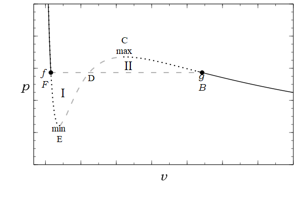
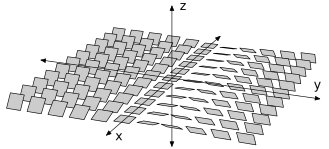
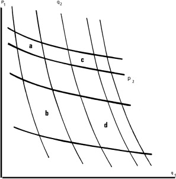
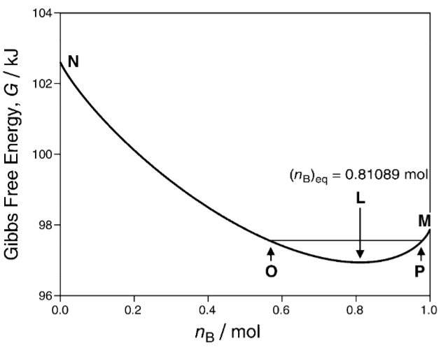
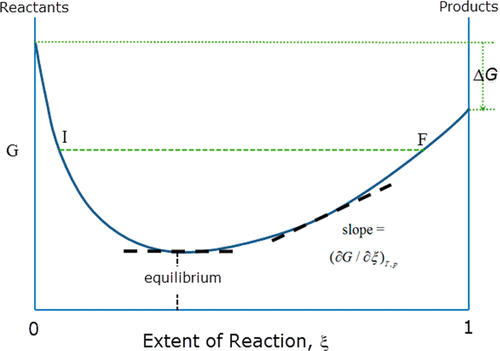
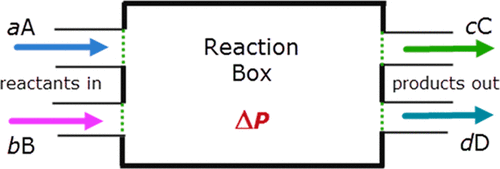
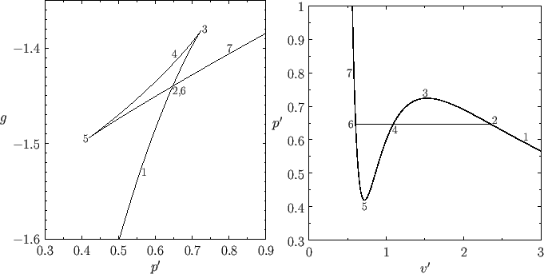
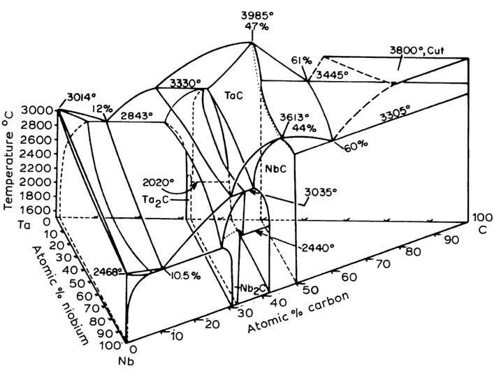

Introduction
It is to the economist, the statistician, the philosopher, and to the general reader that I commend the analysis contained herein… mathematics as applied to classical thermodynamics is beautiful: if you can’t see that, you were born color-blind and are to be pitied.
Paul Samuelson, forewords to (Bickler and Samuelson 1974)
What this essay contains
Unlike my Analytical Mechanics essay, this essay does not cover much of the width covered in a university course on classical thermodynamics or neoclassical economics. Instead, it’s best described as “the conceptual foundations that a typical course does not work well on”, a deep but narrow essay to supplement a shallow but wide typical textbook.
Unlike analytical mechanics, which is typically taught to students intent on reaching the abstract plane of modern theoretical physics, and is thus deep but narrow, a typical course on classical thermodynamics is shallow, but very wide, and taught to a wide student base – theoretical physicists, thermal engineers, electric engineers, chemists, biologists… When something must be taught to a wide audience, and is both deep and wide, depth is sacrificed. This is perfectly practicable, but it leaves a small minority confused with a sinister feeling that the teachers have abused their trust in them. I am in that minority.
The essay contains: three laws of thermodynamics, entropy, Helmholtz and Gibbs free energy, nonextensive entropy, Caratheodory’s axiomatic thermodynamics, Vladimir Arnold’s contact-geometric thermodynamics, Paul Samuelson’s area-ratio thermodynamics, Le Chatelier’s principle, chemical equilibrium, Gibbs phase rule and its extensions, analogies with neoclassical economics, speculative sci-fi.
It does not contain: statistical mechanics, most of the “width” part of thermodynamics and economics.
The prerequisites are multivariate calculus and mathematical maturity. It’s good to be familiar with basic economics as well.
Quick reference
- \(S\): entropy
- \(U\): internal energy
- \(V\): volume
- \(T\): temperature
- \(\beta = 1/T\): inverse temperature
- \(N\): number of particles of a chemical species
- \(n\): number of moles of a chemical species
- \(\xi\): extent of reaction
- \(X\): “other properties that we are not concerned with”
- For example, with an ideal gas trapped in a copper box, its macroscopic state is determined by \(U, N, V\). If we want to focus on \(U\), then we can let \(X = (N, V)\), and write \(S = S(U, X)\).
- Similarly, for a photon gas in a blackbody chamber, its macroscopic state is determined by \(U, V\), since photons can be created and destroyed on the inner surface of the blackbody chamber. We can then write \(S = S(U, X)\) if we are concerned only about how entropy changes with \(U\), holding the other state constant. We can also write \(S = S(V, X)\) vice versa.
Thermodynamics is notorious for having too many partial differentials and coordinate changes. \((\partial_{x_1} f)_{x_1, x_2, \dots, x_n}\) means that we lay down a coordinate system defined by \(x_1, \dots, x_n\), then calculate \(\partial_{x_1}f\), fixing the other coordinates constant. In particular, \((\partial_{x_1} f)_{x_1, x_2, \dots, x_n}\) is likely different from \((\partial_{x_1} f)_{x_1, y_2, \dots, y_n}\).
If in doubt, write down
\[df = \sum_{i=1}^n (\partial_{x_i} f)_{x_1, \dots, x_n} dx_i\]
and reason thenceforth.
Sometimes people write \((\partial_{x_i} f)_{x_2, \dots, x_n}\) instead of \((\partial_{x_i} f)_{x_1, x_2, \dots, x_n}\) to save them one stroke of the pen. I try to avoid that, but be aware and beware.
Further readings
- (Pippard 1964). Slim, elegant, both mathematical and applied. In the best British tradition of mathematics – think James Maxwell and G. H. Hardy.
- (Fermi 1956). The same as above. However, it also covers chemical thermodynamics.
- (Lemons 2019). A very readable introduction to classical thermodynamics, slim but deep. I finally understood the meaning of the three laws of thermodynamics after reading it. Contains copious historical quotations.
- (Lemons 2008). A textbook version of the author’s (Lemons 2019), weaving in history and philosophical contemplation at every turn.
- (Carnot, Clapeyron, and Clausius 1988). A reprint of the most important papers in thermodynamics published before 1900. Useful to have on hand if you are reading (Lemons 2019).
- (Buchdahl 1966). A textbook based on Carathéodory’s axiomatic thermodynamics. The notation is ponderous, and the payoff is unclear. I don’t know what is its intended audience – perhaps professional pedants and differential geometers? Nevertheless, if you need to do research in Carathéodory’s axiomatic thermodynamics, I think this is your best bet.
- Ted Chiang’s Exhalation (2008), printed in (Chiang 2019). A sci-fi story about an alien race where pneumatic engines, not heat engines, are all-important. A better take on stereodynamics than my attempt.
What is thermodynamics?
Both neoclassical economics and classical thermodynamics are about the equilibria of large systems. While a large system is generally hopelessly complicated, almost all the complexity falls away when the system is maximizing a single quantity. Ceaselessly striving to maximize entropy, a complex system sheds its complexity and reaches the pure simplicity of maximal entropy. Ceaselessly striving to maximize profit, a complex company sheds its complexity and reaches the pure simplicity of perfect product.
In both fields, everything we can say about the world are nothing more than systems, constraints, contacts, and equilibria. Time and change do not exist. All we can explain is which states are in constrained equilibrium, not how a system can get there. Atoms do not exist. All we can explain is what happens to homogeneous substances in constrained equilibrium. People do not exist. All we can explain is what happens to constrained economic systems in equilibrium.
Different things can be maximized: the total entropy, or the negative Gibbs free energy, or the profit, or the sum-total of utility, or something else. Through different lenses, different things are maximized, but they predict the same phenomena. Using this mathematical freedom, experts brachiate around the coordinate axes like gibbons brachiating around vines, looking for the perfect angle to solve each particular problem.
| interpretation | maximized quantity | constraint |
|---|---|---|
| conglomerate accounting | book value | Assets is conserved, but can be moved between child companies. |
| social welfare | social utility | Wealth is conserved, but can be redistributed. |
| closed system | entropy | Quantities are conserved, but can be moved between sub-systems. |
| factory production | profit | Some raw materials are on sale at a market, but others are not. |
| consumer choice | utility | Some finished goods are on sale at a market, but others are not. The market uses a commodity money. |
| partially open system | negative free energy | Some quantities can be exchanged with a bath, but others are conserved. |
Even if the capitalist system is to give way to one in which service and not profit shall be the object, there will still be an integral of anticipated utilities to be made a maximum. Since we must find a function which maximizes an integral we must in many cases use the Calculus of Variations. But the problem here transcends the questions of depreciation and useful life, and belongs to the dawning economic theory based on considerations of maximum and minimum which bears to the older theories the relations which the Hamiltonian dynamics and the thermodynamics of entropy bear to their predecessors.
Systems
Systems are the main characters of the drama of thermodynamics. A thermodynamic system is fully determined by a few macroscopic properties, related by equations of state. Once we know enough of its properties, we know all there is to know about such a system. There is nothing left to say about it.
Everything is a thermodynamic system. However, there are two special types: bath systems, and mechanical systems.1 Any number of thermodynamic systems can be connected into a larger system – a compound system.
1 Some children are confused when they heard that squares are rectangles too. I hope you won’t be equally confused when you hear that mechanical systems are also thermodynamic systems.
The prototypical thermodynamic system is a tank of ideal gas whose number of particles is fixed. It has 2 degrees of freedom, so if we write down \(n\) different macroscopic properties, they would (generically) be related by \(n-2\) equations of state. So for example, if we write down the properties internal energy \(U\), temperature \(T\), volume \(V\), pressure \(P\), they would be related by the 2 equations of state
\[PV = k_BNT, \quad U = \frac 32 k_B NT\]
If we know two out of the four of internal energy \(U\), temperature \(T\), volume \(V\), pressure \(P\), then we can solve for all the others by equations of state. The macroscopic properties fully describe the system, and nothing more can be said about it. We cannot ask additional questions such as “Are there more particles on the left than on the right?” or “How long did it take for the system to reach equilibrium?”, because such questions are literally undefined in classical thermodynamics.
Because the properties are related by equations of state, we need only know a few of the properties in order to infer all the rest. For example, knowing the volume \(V\), internal energy \(U\), and particle number \(N\), of a tank of ideal gas, we can infer that its pressure is \(P = \frac{2U}{3V}\), and its temperature is \(T = PV/k_BN\). Succinctly,
\[P = P(U, V, N), \quad T = T(U, V, N)\]
meaning “If we know \(U, V, N\), then we can calculate \(P\) and \(T\)”.
It’s too easy to misread it as saying that \(P\) is a mathematical function of \(U, V, N\). It is not. It really is saying that, there exists a mathematical function \(f_P\), such that for any state \(\omega\) of the system, we have
\[P(\omega) = f_P(U(\omega), V(\omega), N(\omega))\]
Everything about a thermodynamic system is known once we specify how its entropy is a function of its macroscopic properties. For example, the ideal gas is fully specified by
\[S(U, V, N) = k_B N \ln\left[\frac{V}{N}\,\left(\frac{U}{\hat{c}_V k_B N}\right)^{\hat{c}_V}\,\frac{1}{\Phi}\right]\]
where \(\hat c_V\) and \(\Phi\) are constants that differ for each gas.
As another example, the photon gas is defined by
\[S(U, V) = C V^{1/4}U^{3/4}, \quad C=\left(\frac{256\pi^2 k_B^4}{1215 c^3 \hbar^3}\right)^{1/4}\]
The fact that \(S(U, V) \propto V^{1/4}U^{3/4}\) can be derived from 19th-century physics (indeed, it was known to Boltzmann), but the constant \(C\) has to wait for proper quantum mechanics.
Baths
A bath system is an infinite source of a conserved quantity at constant marginal entropy. A bath system is intended to be used as a “free market” where non-bath systems can trade some conserved quantities with.
For example, if we take a copper piston and fill it with ideal gas, then immerse the piston in the bottom of an ocean, then it is playing the role of a volume-and-energy bath with constant pressure-and-temperature. If we cover up the piston with some insulating material, then the ocean suddenly plays the role of merely a volume bath with constant pressure. If we use screws to fix the piston head, then the ocean suddenly becomes merely an energy bath with constant temperature. From this, we see that a bath in itself is a rather vacant concept. A bath should always be in contact with some non-bath system.
Because they are infinitely large, if you connect two baths together, something bad will happen. For example, if you connect two energy baths together, but with different temperature, what would happen? The simple answer is: “A torrent of heat will flow from the hotter to the colder bath.”. The more correct answer is: “Classical thermodynamics does not allow such a question to be asked. It would be like asking what happens when ‘an unstoppable force meets an immovable object’. If we literally have two baths, then we cannot connect them. If we only have two giant oceans that seem like baths when compared to this little tank of gas, then if the two oceans are connected to each other, they will no longer appear as baths to each other.”.
You can take this in two ways. Either will work. You can say that both systems and baths are first-class concepts in thermodynamics, and enforce the rule that you can never connect two baths together. You can also say that systems are first-class concepts in thermodynamics, but baths are second-class concepts, a convenient way to think about a system that is much larger relative to some other systems. Since a bath is a relative concept, it simply is a bad question to ask “What happens if we connect two baths together?” – The correct reply is “You mean, two systems that appear as baths… relative to what?”.
Some important (and unimportant) examples of baths:
- A heat bath, or more accurately an energy bath, is a system that you can take or dump as much energy as you want, always at constant marginal price of energy.
- An atmosphere, or more accurately an energy-and-volume bath, is a system that you can take or dump as much energy or volume as you want, always at constant temperature and pressure.
- The surface of a lake could serve as an energy-and-area bath.
- A large block of salt can serve as a salt-chemical bath.
Mechanical systems
A mechanical system is a thermodynamic system whose entropy is always zero. Essentially all systems studied in classical mechanics are such systems. In classical thermodynamics, they are not put center-stage, but if you know where to look, you will see them everywhere.
An ideal linear-spring has two macroscopic properties: length \(x\) and internal energy \(U\), with equation of state \(U = \frac 12kx^2\). For example, a helix spring is close to an ideal linear-spring.
An ideal surface-spring is the same as an ideal linear-spring, but with area \(A\) instead of length \(x\). Its equation of state is \(U = \sigma A\), where \(\sigma\) is surface tension constant. For example, a balloon skin is close to an ideal surface-spring.
An ideal volume-spring is similar. It would resemble a lump of jelly. An ideal gas, though it looks like a volume-spring, is not an example, because its entropy is not zero. In particular, this means an ideal gas has temperature and can be “heated up”, but a lump of ideal jelly cannot.
In general, we can construct an arbitrary energy storage system, such that it has two macroscopic properties \(x, U\), satisfying \(U = f(x)\), where \(f\) is any differentiable function. To show this, we can imagine taking a mystery box with a chain we can pull on, and by some internal construction with gears, pulleys, weights, and springs, the force on the chain is \(f'(x)\), where \(x\) is the length by which we have pulled. That is the desired system.
State space
A tank of gas has on the order of \(10^{26}\) particles, but in classical thermodynamics, its state is entirely determined if we know its \(U, V, N\). In this sense, we can say that its macroscopic state space has just 3 dimensions. In many situations, such as in the Carnot heat engine, we also fix its \(N\), in which case its state space has just 2 dimensions.
This is typically plotted in either the \((P, V)\) space, or the \((T, S)\) space, or some other spaces, but in every case, there are just two dimensions. We can unify all these diagrams as merely different viewpoints upon the same curvy surface – the state space \(\mathcal X\) itself. Each point \(\omega \in \mathcal X\) in the state space is a state, and each macroscopic property \(X\) is a scalar function of type \(X : \mathcal X \to \mathbb{R}\).
If the state space has just \(d\) dimensions, then we need only \(d\) macroscopic properties \(X_1, \dots, X_d\) in order to lay down a coordinate system for the state space. If we have another macroscopic property \(Y\), then there in general exists a function \(f_Y: \mathbb{R}^d \to \mathbb{R}\), such that \(Y(\omega) = f_Y(X_1(\omega), \dots, X_d(\omega))\) for any state \(\omega\). In other words, we have an equation of state.
Calculus on state space
In thermodynamics, we typically have many more macroscopic properties than dimensions. For example, the state space of an ideal gas has only 3 dimensions, but has many macroscopic properties: \(S, U, V, N, T, P, \mu, \dots\). In this case, every time we take a derivative on the state space, we need to pick exactly 3 properties, since picking different coordinates leads to different partial differentials.
As an illustrative example, let \(x, y, z\) be smooth scalar functions on a smooth 2D surface, such that their contour lines are linearly independent at every point on the surface. Then, picking any 2 out of \(x, y, z\) would give us a coordinate system. Any other smooth function \(f\) on the surface can be expressed in 3 different ways, as
\[f = f_{x, y}(x, y) = f_{y, z}(y, z) = f_{z, x}(z, x)\]
This gives us two different ways to “differentiate \(f\) with respect to \(x\)”:
\[ \left(\pp{f}{x}\right)_y := \partial_1 f_{x, y}, \quad \left(\pp{f}{x}\right)_z := \partial_2 f_{z, x} \]
where \(\partial_1\) means “partial differentiation with respect to the first input”, etc.
Let \(x, y\) be the usual coordinates on the 2D plane \(\mathbb{R}^2\), and let \(z = x + y, w = x - y\). We can pick any 2 of \(x, y, z, w\) to construct a coordinate system. Then,
\[ \left(\pp{y}{x}\right)_y = 0 \quad \left(\pp{y}{x}\right)_z = -1 \quad \left(\pp{y}{x}\right)_w = 1 \]
In general, if we pick \(x_1, \dots, x_d, y\) from a list of many smooth scalar functions on a surface, such that \(x_1, \dots, x_d\) form a smooth and linearly independent coordinate system on the surface, then we can express \(y = f(x_1, \dots, x_d)\) for some function \(f : \mathbb{R}^d \to \mathbb{R}\), and define
\[ \left(\pp{y}{x_1}\right)_{x_2, \dots, x_d} = \partial_1 f, \quad \left(\frac{\partial y}{\partial x_1\partial x_2}\right)_{x_3, \dots, x_d} = \partial_1\partial_2 f, \quad \dots \]
In particular, we have
\[dy = \sum_{i=1}^d (\partial_{x_i} y)_{x_1, \dots, x_d} dx_i\]
Exercise 1 Based on the following diagram, prove that if we have three smooth scalar functions \(x, y, z\) on a smooth2 2D surface, such that their contour surfaces are linearly independent, then \(\left(\frac{\partial x}{\partial z}\right)_y\left(\frac{\partial y}{\partial x}\right)_z\left(\frac{\partial z}{\partial y}\right)_x = -1\). Generalize this to higher dimensions.
2 It is sufficient to assume the surface and the scalar functions are \(C^2\), but we need not worry about it, because everything is smooth in classical thermodynamics, except at phase transitions.
Constraint
A constraint is an equation of form \(f(A, B, C, \dots) = f_0\), where \(f\) is a mathematical function, \(A, B, C, \dots\) are macroscopic properties, and \(f_0\) is a constant.
For example, if we have two tanks of gas in thermal contact, then the constraint is as follows:
\[ \begin{cases} V_1 &= V_{1,0} \\ V_2 &= V_{2,0} \\ U_1 + U_2 &= U_{1,0} + U_{2,0} \\ \end{cases} \]
meaning that the volume of each tank of gas is conserved, and the sum of their energy is also conserved.
The constraints on a compound system are determined by the contacts between its subsystems.
Contacts
If we only have systems isolated in a perfect vacuum, then nothing interesting will happen. If two systems are perfectly connected, then they will never be brought apart. A contact allows two systems to interact, without destroying their individuality. It allows two systems to communicate, without becoming literally one system. Economically, contacts are trade contracts.
In general, the effect of a contact is to reduce the number of constraints by one. For example, a metal rod between two pistons reduces the two constraints
\[V_1 = V_{1,0}, \quad V_2 = V_{2, 0}\]
into one constraint: \[V_1 + V_2 = V_{1,0} + V_{2,0}\]
As another example, in a tank of three kinds of gas \(N_2, H_2, NH_3\), allowing a single chemical reaction \(N_2 + 3H_2 \rightleftharpoons 2NH_3\) reduces three constraints
\[ N_{N_2} = N_{N_2, 0}, \quad N_{H_2} = N_{H_2, 0}, \quad N_{NH_3}= N_{NH_3, 0} \]
into two:
\[ N_{N_2} - N_{N_2, 0} = (N_{H_2} - N_{H_2, 0})/3, \quad N_{N_2} - N_{N_2, 0} = (N_{NH_3} - N_{NH_3, 0})/2 \]
A contact can be nonlinear. For example, if we have two pistons of the same area, connected by a lever, such that pushing on one piston by \(\Delta x\) would be pulling on the other piston by \(2 \Delta x\), then the constraint becomes \(2(V_1 - V_{1,0}) + (V_2 - V_{2,0}) = 0\). And by designing a series of levers, gears, and chains, we can realize any constraint function \(f(V_1, V_2) = f(V_{1,0}, V_{2,0})\) for any smooth function \(f\).
Compound systems
A compound system is nothing more than several systems connected. If we know the connections, and the entropy function of each subsystem, then we know everything about the compound system. The number of DOF for the compound system is the sum of the DOF of the subsystems, minus the degree of constraints.
For example, in the adiabatic expansion of a tank of ideal gas, we are really studying one compound system made of 3 subsystems:
- a tank of ideal gas (thermodynamic system),
- a lump of mass in gravity (mechanical system),
- with a gear system between them (contact).
The gear system is designed with gear-ratio that varies as the system turns, in just the right way such that the system is always in equilibrium no matter the position of the piston, so that it really has no preference of going forwards or backwards.
We typically think of the tank of ideal gas itself as part of the thermodynamics, and the other parts as “the environment”, but we should consider one single compound system, properly speaking, of which the tank of ideal gas is merely a sub-system. This way, we can state directly that the entropy of the entire compound system is maximized.
Example 1 (heat-engine-and-environment compound system) A heat engine is a thermodynamic system that is used as a component of a larger compound system. The large system contains 4 parts: two energy baths, one heat engine, and one carefully designed mechanical system acting as energy storage.
If you only want a heat engine that works, then the energy storage does not need to be carefully designed. However, if you want a Carnot heat engine, i.e. at maximal efficiency, then the energy storage must be designed to be exactly right. It must be designed to follow the exact parameters of the heat engine, as well as the temperatures of the two energy baths. If any of those is ignored, the energy storage would fail to “mesh” with the rest of the compound system, and cause waste.
This is why a heat engine must be a component of a larger compound system. Every part depends on every other part. The energy storage unit is just as important and precisely designed as the heat engine is.
Equilibrium, virtual vs actual states
Freedom is an iron cage.
Constraints set it free again.
On the African savannah, there lived a bunch of meerkats. Meerkats love to stand on the tallest place.
At first, they could stand wherever they wanted, so they all stood on one single hill. It was crowded. A blind lion who had memorized the landscape came and ate all of them.
Then humans came and added long walls that divided the savannah into thin stripes. Now each meerkat’s location is determined by the stripe in which it happened to fall. The blind lion could find the meerkat if he knew the location of the stripe. In other words, optimizing for height, when there is one constraint, leads to one dimension of uncertainty.
This is a subtle point, so I will say it again. If you want to optimize for a quantity, and you don’t have a constraint, then you would always go to the globally best solution. The whole space of possibilities is open to you, but you don’t need them. Those states are “virtual”, because they are never observed, even though they are out there.
But if you have one constraint, then you have one unique solution for each possible setting of constraint. Suddenly a lot of those virtual states become real. You are still not free, but at least now you have a puppet master.
In classical thermodynamics, only equilibrium states are “real”. Nonequilibrium states are “virtual”. In Lagrangian mechanics, only stationary-action paths are real, and the other paths are virtual. You can imagine that if you throw a rock upwards, it might execute a complex figure-8 motion before returning to the ground again, but that’s a virtual path. The only real path is the unique virtual path that stationarizes the action integral.
Similarly, in classical thermodynamics, you could imagine that a tank of gas contains all its gas on the left side. Its entropy is just \(S(U, V/2, N)\), but that’s a virtual state that does not maximize entropy under constraint. The unique entropy-maximizing virtual state is the real state.
For every constraint, there are many nonequilibrium states that satisfy the constraint, but only one equilibrium entropy, and so equilibrium entropy is a function of constraints, even though the entropy function itself is not. It optimizes all its complexities away, allowing us to know it through just its external constraints.
Some common misconceptions
Thermodynamics is not statistical mechanics. Forget about molecules and atoms. Forget about statistics and statistical mechanics. Forget about \(S = k_B\ln \Omega\) or \(S = -\sum_i p_i \ln p_i\). Randomness does not exist in classical thermodynamics.
Forget about the first law of thermodynamics. Energy is nothing special. The conservation of energy is no more important than the conservation of volume, or the conservation of electric charge.
Forget about heat. Heat does not exist – it is not a noun, not even an adjective, but an adverb at most. The theory of caloric has already been disproven in 1798 by the cannon-boring experiment.
Heat energy and work energy are both misnomers. Neither are types of energy. Instead, they are types of energy-flow. We should speak of only the heatly flow of energy and the workly flow of energy. In this way, both “heat” and “work” are revealed to be actually adverbs. This is a bit awkward, so we will continue to speak of “heat” and “work”, but you should understand that it’s a shorthand, and that there is neither “heat energy” nor “work energy”.
To perform work, one must perform work upon something. In other words, there is no such thing as “system A performed work”. There is really “some energy and length is between A and B, in compliance with an equation constraint, such that the total entropy of the compound system has remained constant”.
Forget about time. Time does not exist in classical thermodynamics. We can say nothing at all about what happens between equilibria. We can only say, “This is an equilibrium, but that is not an equilibrium.”. That is all we can say. See this, and you will see thermodynamics aright. As to what happened “between them”, that we must pass over in silence.
The name “thermodynamics” is a complete misnomer, because heat does not exist (thus no “thermo-”) and time does not exist (thus no “-dynamics”). If I am allowed a bit of name-rectification, I will call it “entropo-statics”.
If time does not exist, you ask, what do we mean when we study Joule expansion? That is, when we take half a tank of gas, and suddenly open the middle wall and wait until the gas equilibrates in the entire tank?
Quiet. We did not open the middle wall. We did not wait. Gas did not expand. The past did not cause the future. Time is a stubbornly persistent illusion, and causality too.
In fact, we are considering two different problems in thermodynamics.
First problem: Given a tank of gas with internal energy \(U = U_0\), molar-amount \(n = n_0\), and constraint \(V \leq \frac 12 V_0\). What is its equilibrium state? Answer: The state that maximizes entropy under the constraints: \[ \begin{cases} \max S(U, n, V) \\ V \leq \frac 12 V_0 \\ U = U_0 \\ n = n_0 \end{cases} \]
where \(S(U, n, V)\) is the entropy of the gas when its states properties are \(U, n, V\).
Similarly, the second problem is another constraint-optimization problem: \[ \begin{cases} \max S(U, n, V) \\ V \leq V_0 \\ U = U_0 \\ n = n_0 \end{cases} \]
That the two different problems seem to “follow one from another” is an illusion. In reality, they only appear to follow one another because this is what we observe in the real world: one equilibrium follows another. In equilibrium thermodynamics, equilibria do not follow one another – each stands alone.
Time only appears in the following sense: we observe a real-world system, like a car engine, and notice that its motion seems to consist of a sequence of equilibria. Not quite true equilibria, since true equilibria do not change. Maybe “pseudo-equilibria”? Too dismissive. Let’s call them “quasi-equilibria” instead.
Now, keeping those “quasi-equilibria” in mind, we muddle around the ocean of classical thermodynamics, until we have found some equilibria that resemble the quasi-equilibria we have in mind. And so, from the bottom of the ocean, we pick up one equilibrium, then another, then another. Then we string together these little equilibria along a number line like a pearl necklace. We run our fingers over these pearls and delight in their “motion”, like flipping the pages of a stop-motion book and shouting, “Look, it is moving!”.
The three laws
More accurately: one law and two non-laws.
Second law
For the equilibrium of any isolated system it is necessary and sufficient that in all possible variations of the state of the systems which do not alter its energy, the variation of its entropy shall either vanish or be negative.
The second law of thermodynamics is all-important: maximizing entropy is all of classical thermodynamics. All other parts are just tricks for maximizing entropy.
Although, there are actually two aspects of the second law, subtly different. One of them is static, while the other is dynamic:
- Static: A thermodynamic system is described by a function on the state space, called the entropy function. Each system can be placed under many different forms of constraints. Under each possible constraint, the only physically observable state is the state that maximizes entropy under constraint.
- Dynamic: The entropy of a thermodynamic system does not decrease over time.
There is no difficulty with the static statement, but many difficulties with the dynamic statement, since it involves time, which really does not exist in classical thermodynamics. Nevertheless, since time is so important to the rest of physics, physicists, especially physics teachers, have repeatedly tried to hack it back into the theory, resulting in predictable and endless confusions. Since we do not compromise with intuition, in the rest of this essay, we will use the static formulation as much as possible.
First law
As a student, I read with advantage a small book by F. Wald entitled “The Mistress of the World and her Shadow”. These meant energy and entropy. In the course of advancing knowledge the two seem to me to have exchanged places. In the huge manufactory of natural processes, the principle of entropy occupies the position of manager, for it dictates the manner and method of the whole business, whilst the principle of energy merely does the book- keeping, balancing credits and debits.
The first law of thermodynamics is entirely trivial. Energy is nothing special! Energy is just a conserved quantity, one among equals, much like volume, mass, and many other things… Every conserved quantity is equally conserved,3 so it does not deserve a special thermodynamic law. You might as well say “conservation of mass” is “the second-first law of thermodynamics” and “conservation of volume” is “the third-first law of thermodynamics”, and “conservation of electrons” and “conservation of protons” and “conservation of length” (if you are studying a thermodynamic system restricted to move on a line) and “conservation of area” (if you are studying a thermodynamic system restricted on the surface of a lake), and so on…
3 The first law of thermodynamics had always struck me as oddly out of place, almost like a joke I could not catch, like
All animals are equal, but some animals are more equal than others
but with
All conserved quantities are conserved, but some quantities are more conserved than others.
I kept waiting for the textbooks, or the teachers, or someone to drop the act and confess, “Actually, we were joking – conservation of energy really is not that special, and we were just bored with standard physics and wanted to confuse you with a cute magic trick before showing you what standard physics really is saying.”. Slowly, I realized that there is no joke – conservation of energy is unironically treated as special not just by the students but even by the teachers. I had to figure out for myself how the joke really works, and it required me to rebuild thermodynamics according to my preferences.
This sounds extraordinary, but that is merely how classical thermodynamics works. The first law of thermodynamics does not deserve its title. It should be demoted to an experimental fact and not a law. Just to drive the point home, I wrote an entire sci-fi worldbuilding sketch about an alien species for which the conservation of volume that is fundamental, not energy, and which discovered stereodynamics. If you can laugh at their mistaken importance of the conservation of volume, maybe you can laugh at the mistaken importance of the conservation of energy too.
The proper place for the law of conservation of energy is not classical thermodynamics, but general physics, because energy is nothing special inside classical thermodynamics, but it is extremely special if we zoom out to consider the whole of physics. Whereas in classical thermodynamics, systems conserve energy, and volume, and mass, and electron-number, and proton-number, and… when you move outside of thermodynamics, such as when you add in electrodynamics, special relativity, and quantum mechanics, all kinds of conservations breakdown. You don’t have conservation of mass, or number of electrons, or even volume, but energy is always conserved.
This explains the long confusion around the conservation of energy. Within equilibrium thermodynamics, every conserved quantity is conserved, yes, but physicists are less interested in theoretical purity than mathematicians. They know that outside, energy is a more special conserved quantity than others, and so they can’t help but feel like energy should be treated as special inside thermodynamics too.
Zeroth law
Now that the first law has been dispelled, we can dispel the zeroth law of thermodynamics too. If energy falls from grace, so must its shadow, temperature.
Theorem 1 (general zeroth law) If \(S_1(X_1, Y) + S_2(X_2, Y)\) is maximized under the constraint \(X_1 + X_2 = X\), then \((\partial_X S_1)_Y = (\partial_X S_2)_Y\).
| maximized quantity \(S\) | conserved quantity \(X\) | derivative \((\partial_X S)_Y\) |
|---|---|---|
| entropy | energy | inverse temperature \(\beta\) |
| entropy | volume | \(\beta P\) |
| entropy | particles | \(-\beta \mu\), where \(\mu\) is chemical potential |
| entropy | surface area | \(-\beta\sigma\), where \(\sigma\) is surface tension |
| production value | raw material | marginal value |
Third law
The third law is rarely, if ever, used in classical thermodynamics, and its precise meaning is still unclear. It seems to me that its proper place is not thermodynamics, but quantum statistical mechanics, where it states that a substance, when at the lowest possible energy (ground state), has finite entropy – Einstein’s formulation of the third law. (Klimenko 2012)
An economic interpretation
Here is an economic interpretation of classical thermodynamics. There are other possible interpretations, and we will use the others in this essay.
In this interpretation, the laws of nature become the CEO of a company. Every conserved quantity is a commodity. The company has some commodity. Commodities themselves have no intrinsic value. Instead, the company is valued by a certain accounting agency. The CEO’s job is to move around the commodities so that the accounting agency gives it the highest book-value.
A compound system is a conglomerate company: a giant company made of little companies. If entropy is extensive, then it means the total book-value for the conglomerate is the sum of the book-value of each subsidiary company. Otherwise, entropy is nonextensive, and the accounting agency believes that the conglomerate has corporate synergy.
The inverse temperature \(\beta\) is the marginal value of energy:
\[\beta = \frac{d(\text{value of a sub-company})}{d(\text{energy owned by the sub-company})}\]
The pressure \(P\), multiplied by \(\beta\), is the marginal value of space:
\[\beta P = \frac{d(\text{value of a sub-company})}{d(\text{volume owned by the sub-company})}\]
It might appear odd to write \(\beta P\), but in the entropy-centric view of thermodynamics, it is the quantity \(\beta P\) that is fundamental, and in comparison, the pressure \(P\) is less fundamental, as a ratio \(P := \frac{\beta P}{\beta}\). Why, then, do we speak of pressure \(P\) and temperature \(T\), instead of \(\beta\) and \(\beta P\)? It is because classical thermodynamics is traditionally understood as energy-centric.
Basic consequences
Thermodynamic force/suction
Since nature is entropy-maximizing, if entropy can be increased by moving some energy from one system to another, it will happen. Similarly for space. It would seem as if there is a thermodynamic suction that is sucking on on energy, and the side with the higher thermodynamic suction tends to absorb it.
\[ \text{thermodynamic suction of $X$} = \left(\frac{\partial S}{\partial X}\right)_{\text{non-}X} \]
In energy-centric thermodynamics, we use thermodynamic force, or thermodynamic potential, defined by
\[ \text{thermodynamic force of $X$} = -\frac{\left(\frac{\partial S}{\partial X}\right)_{\text{non-}X}}{\left(\frac{\partial S}{\partial U}\right)_{\text{non-}U}} \]
For example, for a tank of gas, the macroscopic properties are \(U, V, N\), and so it has three thermodynamic suctions:
\[ \begin{aligned} \beta &= (\partial_U S)_{V, N}\\ \beta P &= (\partial_V S)_{U, N}\\ -\beta \mu &= (\partial_N S)_{U, V} \end{aligned} \]
and the thermodynamic forces associated with \(V, N\) are \(P\) and \(-\mu\).
Unfortunately, the notations for thermodynamic suctions are far from elegant. The first one, \(\beta\), is the inverse of temperature.. The second one, \(\beta P\), is \(\beta\) multiplied by pressure. The third one is truly the most annoying, as it not only involves \(\beta\), but also a negative sign. To see how the notation came about, we can write it out in differential form:
\[dS = \beta dU + \beta P dV - \beta \mu dN\]
Conventional notations are energy-centric, so we rewrite it to single out \(dU\):
\[ dU = TdS + (- PdV) + \mu dN \]
Now we see how the notation came about: \(TdS\) is the heat energy-flow into the system, \(-PdV\) is the mechanical work energy-flow into the system, and \(\mu dN\) is the chemical energy-flow into the system.
If I could truly reform notation, I would redefine \(\beta P\) as \(p_V\), meaning “the price of volume”, meaning “the price of particle”, and so on. In this notation, we have:
\[ \begin{aligned} dS &= p_U dU + p_V dV + p_N dN \\ dU &= p_U^{-1}dS - \frac{p_V}{p_U}dV - \frac{p_N}{p_U}dN \end{aligned} \]
Example 2 (photon gas with \(\mu = 0\)) Suppose we have a piston chamber, with its inner surface covered with silver, and there is a tiny speck of blackbody inside it, then the chamber would be filled with bouncing photons, in the form of a “photon gas”. The photons would reflect off the surface of the chamber, some absorbed and some emitted in turn, by the blackbody.
As usual for gas, the state of the system is determined by its internal energy, volume, and particle number: \(U, V, N\), with
\[dS = \beta dU + \beta PdV - \beta \mu dN\]
However, the photon gas is quite special, in that photons can be created and destroyed by the speck of blackbody, so at equilibrium, we must have \(\beta\mu = 0\), for otherwise, the system would be able to increase in entropy simply by creating/destroying more photons, and thus it is not in equilibrium.
This contrasts with the typical case with chemical gases like oxygen, where the particle number in a reaction chamber is constant, allowing \(\mu \neq 0\) even at equilibrium.
Helmholtz free entropy
When we have a small system connected to a large system, while we can solve its equilibria by maximizing the plain old entropy for the full compound system, it is often easier conceptually to define a “free entropy” for the small system, and treat the large system as a bath. This is similar to how one can solve for the motion of a cannonball on earth by describing a constant gravitational acceleration, even though we can could have solved for the full cannonball-earth two-body system.
Definition 1 (Helmholtz free entropy) The Helmholtz free entropy is the convex dual of entropy with respect to energy:
\[ f(\beta, X) = \max_U [S(U, X) - \beta U] \tag{1}\]
where \(U\) is its internal energy, and \(X\) are some other macroscopic properties.
Of historical importance is the Helmholtz free energy \(F := - T f\), or equivalently,
\[ F = \min_U [U - TS(U, X)] \tag{2}\]
Theorem 2 (maximize Helmholtz free entropy) If a thermodynamic system is in energy-contact with an energy bath with price \(\beta\), and is held under constraint on the state by \(C(X) = 0\), then the system equilibrates at
\[ \begin{cases} \max_{U, X} [S(U, X) - \beta U] = \max_{X} f(\beta, X)\\ C(X) = 0 \end{cases} \]
That is, the system always equilibrates at the maximal Helmholtz free entropy state that satisfies the constraint.
Equivalently, the system minimizes its Helmholtz free energy under constraint.
If we prove the case for Helmholtz free entropy, then by multiplying it by \(-T\), we find that the system minimizes its Helmholtz free energy under constraint. So it remains to prove the case for Helmholtz free entropy.
We prove the case where there is no constraint on the state of the system. The proof for the case with constraint is similar.
Suppose the system starts out at \(\beta, U_0, X\). Then the equilibrium condition is
\[ \begin{cases} \max (S_{bath} + S) \\ U_{bath} + U = U_{bath, 0} + U_{0} \end{cases} \]
The entropy of the bath is
\[S_{bath} = S_{bath, 0} + \beta Q\]
where \(Q = U_{bath} - U_{bath, 0}\) is the amount of energy received by the bath as heat.
Plugging this back in, the equilibrium condition simplifies to
\[ \max_U [\beta (U_0 - U) + S(U, X)] \]
which is the desired result.
Theorem 3 (Helmholtz free energy difference is available for work) Consider the following method of extracting mechanical energy. Connect the system to an energy bath at the energy price \(\beta\), and to a mechanical system of arbitrary design. The system starts at \(\beta, U_0, X_0\) and ends at \(\beta, U_1, X_1\). No matter how the mechanical system is designed, and no matter whether the process is reversible or not, we have
\[ W\leq F(\beta, U_0, X_0) - F(\beta, U_1, X_1) \]
where \(W\) is “mechanical work done by the system”, that is, the increase in internal energy of the mechanical system. This is an equality when the process is reversible.
By conservation of energy and the second law,
\[ \begin{cases} U_1 = U_0 - (W + Q) \\ \beta Q + S(U_1, X_1) \geq S(U_0, X_0) \end{cases} \]
which simplifies to the result.
If the process is reversible, then the entropy before and after must be equal, which gives us
\[ \begin{cases} U_1 = U_0 - (W + Q) \\ \beta Q + S(U_1, X_1) = S(U_0, X_0) \end{cases} \]
which simplifies to the result.
This result is typically interpreted as saying that \(\Delta F = W\), that is, in a system in constant thermal equilibrium with an energy bath of constant temperature, the decrease in Helmholtz energy of the system is the maximal mechanical work extractable from the system. Incidentally, this explains the odd name of “free energy” – “free” as in “free to do work” to contrast with the other parts of internal energy, which are chained up and not free to do work. Energy is born free, and eventually everywhere it is in chains.
Theorem 4 (envelope theorem for Helmholtz) For any inverse temperature \(\beta > 0\) and thermodynamic properties \(X\), let \(U^*\) be the optimal internal energy that maximizes Helmholtz free entropy. We have
\[ \begin{aligned} \beta &= (\partial_U S)_X|_{U=U^*(\beta, X), X = X} \\ df &= (\partial_X S)_U|_{U=U^*(\beta, X), X = X} dX - U^*(\beta, X) d\beta \end{aligned} \]
if \(S\) is differentiable and strictly concave at that point.
For the first equation, differentiate \(f\). For the second equation, apply the same no-arbitrage proof as in the proof of Hotelling’s lemma (see the essay on Analytical Mechanics).
Economically speaking, the second equation is a special case of the envelope theorem, just like Hotelling’s lemma.
First-order phase transition
What happens if \(S\) is not differentiable and strictly concave? In this case, we do not have \(\beta = (\partial_U S)_X\). We have two possibilities.
The first possibility is pictured as follows. There is a kink in the curve of \(S(U, X)\). At that point of critical internal energy \(U_c\), there is an entire interval of possible \(\beta\). What we would notice is that at that critical internal energy and critical entropy, the system can be in equilibrium with any heat bath with any temperature between \([T_{c, min}, T_{c, max}]\). As far as I know, such systems do not exist, as all physically real systems have a unique temperature at all possible states.
The second possibility is pictured as follows. There is a bump in the curve, such that we can draw a double tangent over the bump, with slope \(\beta_c\). At that critical inverse temperature, the system can be either at the lower tangent point, or the upper tangent point. It cannot be anywhere in-between, because as we saw, such points do not minimize \(f(\beta, X)\), and thus are unstable.
For example, if we confine some liquid water in a vacuum chamber, and bathe it in a cold bath, then at its critical \(\beta_c\), it would split into two parts, one part is all ice, and the other part is all water, mixed in just the right proportion to give it the correct amount of total internal energy. As it loses internal energy, the ice part grows larger, until it is all ice, at which point the system has finally gotten over the bump, and could cool down further.
At the critical point, \((\partial_{\beta}f)_X\) changes abruptly. So if we plot \(\beta \mapsto f(\beta, X)\), the curve will kink there.
Theorem 5 (Maxwell equal area rule) In a first-order phase transition at a fixed temperature and varying pressure/volume, the \(P, V\) diagram has a horizontal line going from \((P_c, V_1)\) to \((P_c, V_2)\), such that
\[\int PdV = P_c(V_2-V_1)\]

Fix the system’s internal energy \(U\), and its temperature \(T\), and plot the \(V, S\) curve.
When pressure is at a critical value \(P_c\), the line of slope \(\beta P_c\) is tangent to the \(V \mapsto S(U, V)\) curve at two different points, with volumes \(V_1, V_2\). This is that first-order phase transition.
Now, move the system state from the first point to the second. During the process, \[\int PdV = \int (TdS -dU) = \int TdS = T \Delta S = T \beta P_c(V_2 - V_1) = P_c(V_2-V_1)\]
Other free entropies and energies
Consider a thermodynamic system whose entropy function is \(S(U, V, X)\), where \(U\) is the internal energy and \(V\) is the volume. Its Gibbs free entropy is
\[ g(\beta, \beta P, X) = \max_{U, V} (S(U, V, X) - \beta U - (\beta P)V) \]
In other words, it’s the convex dual of entropy with respect to energy and volume. Similarly, its Gibbs free energy is \(G = -g/\beta\).
Theorem 6 (Gibbs free entropy is maximized) Let a thermodynamic system be in equilibrium with an energy-and-volume bath of prices \(\beta, \beta P\). If the system has constraint on the state by \(C(X) = 0\), then the system equilibrates at
\[ \begin{cases} \max_{X} g(\beta, \beta P, X)\\ C(X) = 0 \end{cases} \]
And if \(S\) is strictly concave and differentiable at that point, then \(dg = (\partial_X S)_{U, V} dX - Ud\beta - V d(\beta P)\).
Theorem 7 (Gibbs free energy difference is available for work) Connect a system to an energy-and-volume bath at marginal entropies \(\beta, \beta P\), and a mechanical system of arbitrary design. The system starts at \(\beta, \beta P, X_0\) and ends at \(\beta, \beta P, X_1\). Then,
\[ W\leq G(\beta, \beta P, X_0) - G(\beta, \beta P, X_1) \]
where \(W\) is “work”, that is, the increase in internal energy of the mechanical system. If the process is reversible, then equality holds.
Theorem 8 (envelope theorem for Gibbs) For any inverse temperature \(\beta > 0\), any pressure \(P\), and other thermodynamic properties \(X\), let \(U^*, V^*\) be the optimal internal energy and volume that maximizes Gibbs free entropy, then
\[ \begin{aligned} \beta &= (\partial_U S)_{V, X} \\ \beta P &= (\partial_V S)_{U, X}\\ dg &= (\partial_X S)_{U, V} dX - U^* d\beta - V^* d(\beta P) \end{aligned} \]
if \(S\) is differentiable and strictly concave at that point. Here, the left sides of all equations are evaluated at \(U=U^*(\beta, \beta P, X), V=V^*(\beta, \beta P, X), X = X\).
Exercise 2 Prove the above theorems for Gibbs free entropy.
Similarly, if a system is in energy-volume-chemical contact with an energy-volume-chemical bath, then the following Landau free entropy is useful:
\[ \omega(\beta, \beta P, -\beta\mu_1, \dots, -\beta\mu_n) = \max_{U, V, N_1, \dots, N_n} \left(S(U, V, N_1, \dots, N_n, X) - \beta U - (\beta P)V - \sum_{i=1}^n (-\beta \mu_i) N_i \right) \]
In other words, it’s the convex dual of entropy with respect to energy, volume, and particle numbers.
Exercise 3 Formulate and prove the analogous theorems for Landau free entropy.
Exercise 4 If we consider a system, surrounded by gas, inside an adiathermal piston under an atmosphere, then we can consider the following form of free energy: \(\tilde s(U, \beta P, X) := \max_{V} (S(U, V, X) - \beta U - (\beta P)V)\). Formulate and prove the analogous theorems for this free entropy.
Take-home lessons:
- When a system is in contact with a \(Y\)-bath, then it is useful to consider the convex dual of the entropy with respect to \(Y\), that is, \(\max_Y (S(Y, X) - p_Y Y)\), where \(p_Y\) is the marginal entropy of \(Y\) of the bath. That is, the price of entropy on the bath-market.
- Free entropy is maximized when the system equilibrates with a bath. Free energy is minimized.
- Change in free energy is the maximal amount of work extractable when the system equilibrates with both a bath and a mechanical system. This maximal amount of work is extracted precisely when the process is reversible. The process is irreversible precisely when less than maximal amount of work is extracted.
Maxwell relations
Since \(dS = \beta dU + \beta P dV\), we have the first Maxwell relation
\[ \partial_U \partial_V S = (\partial_V \beta)_U = (\partial_U(\beta P) )_V \tag{3}\]
In economic language, it states
\[ \partial_{q_i}\partial_{q_j} S = (\partial_{q_i} p_j)_{q_j} = (\partial_{q_j} p_i)_{q_i} \tag{4}\]
where \(q_i\) is the quantity of commodity \(i\), and \(p_i\) is its marginal utility. In economics, we usually prefer writing demanded quantity as a function of marginal price as
\[(\partial_{p_j}q_i)_{q_j} = (\partial_{p_i}q_j)_{q_i}\]
This is a symmetry of the cross-price elasticity of demand.4
4 Samuelson used the Maxwell relations, and other relations, to justify neoclassical economics. His idea is that, while utility functions are unobservable, and we do not have a scientific instrument to measure “economic equilibrium”, we can make falsifiable predictions from assuming that the economy is in equilibrium – such as the symmetry of the cross-price elasticity of demand.
For example, if \(i, j\) are noodles and bread, then \((\partial_{q_i} p_j)_{q_j}\) is how much the marginal price of bread would rise if I have a little more noodle. As noodles and bread are substitutional goods, we expect the number to be negative, meaning that having more noodles, I would price bread less. The Maxwell relation then tells us that it is exactly the same in the other direction: If I am given a little more bread, I would price noodles less. Not only that, I would want less by exactly the same amount.
The second relation is a bit hard to explain, since enthalpy really does not have a good representation in entropy-centric thermodynamics. However, it turns out to be just the third relation with \(i, j\) switched.
Since \(df = \beta P dV - Ud\beta\), we have the third Maxwell relation
\[ \partial_\beta\partial_V f = -(\partial_V U)_\beta = +(\partial_\beta(\beta P))_V \tag{5}\]
In economic language, we have
\[ \partial_{p_i}\partial_{q_j} \left[\max_{q_i}(S(q) - p_i q_i )\right]= -(\partial_{q_j} q_i)_{p_i} = (\partial_{p_i}p_j)_{q_j} \tag{6}\]
Continuing from the previous example, if \(i, j\) are noodles and bread, and we open a shop with an infinite amount of noodles always at the exact price, then I would buy and sell from the noodle shop until my marginal price of noodles is equal to the shop’s price. Now, \((\partial_{q_j} q_i)_{p_i}\) is how much noodles I would buy if I am given a marginal unit of bread. As noodles and bread are substitutional goods, this number is negative. This then means \((\partial_{p_i}p_j)_{q_j} > 0\), meaning that if the noodle price suddenly increases a bit, then I would sell a bit of noodles until I have reached equilibrium again. At that equilibrium, since I have less noodles, I would price higher its substitutional good, bread, by an equal amount as the previous scenario.
Since \(dg = -Ud\beta - Vd(\beta P)\), we have the fourth Maxwell relation
\[ -\partial_{\beta}\partial_{\beta P}g = (\partial_{\beta P}U)_\beta = (\partial_\beta V)_{\beta P} \tag{7}\]
In economic language, we have
\[ \partial_{p_i}\partial_{p_j} \left[\max_{q_i, q_j}(S(q) - p_i q_i - p_j q_j)\right]= -(\partial_{p_j} q_i)_{p_i}= -(\partial_{p_i} q_j)_{p_j} \tag{8}\]
This is another symmetry of cross-price elasticity of demand.
Continuing from the previous example, if \(i, j\) are noodles and bread, and we open a shop with an infinite amount of noodles and bread, then I would of course buy and sell from the shop until my marginal prices of noodles and bread are equal to the shop’s prices. Now, if the shop suddenly raises the price of bread by a small amount, I would sell off some bread until my marginal price for bread increases to the shop’s new price. Now my marginal price for noodles increases too by substitutional effect, so I buy some noodles. Thus \((\partial_{p_j} q_i)_{p_i} > 0\). Switching the scenario, we find that raising the price of noodles would make me buy bread by an amount equal to that in the previous scenario.
We use the notation of economics here.
Suppose we have commodities \(1, 2, \dots, n\). We pick two commodities \(i, j\), and fix all other commodity quantities. Thus, we can write \(dS = p_i dq_i + p_j d q_j\).
Since knowing \(n\) properties of the thermodynamic system allows us to know its exact state, and we have already fixed \(n-2\) properties of it, there only remain two more degrees of freedom. We can parameterize this by \((q_i, q_j)\), or \((p_i, q_j)\), or \((p_i, p_j)\), or any other reasonable coordinate system.
If the thermodynamic system undergoes a cycle, then
\[0 = \oint dS = \oint p_i dq_i + \oint p_j dq_j\]
and thus, if we take the cycle infinitesimally small, we find that \(dp_i\wedge dq_i = -dp_j \wedge dq_j\). That is, the map \((p_i, q_i) \mapsto (p_j, q_j)\) preserves areas, but reverses orientation. In particular, we have a Jacobian \[ \frac{\partial(p_i, q_i)}{\partial(p_j, q_j)} = -1 \]
Now, let \((x, y)\) be an arbitrary coordinate transform. By the chain rule for Jacobians, \[ \frac{\partial(p_i, q_i)}{\partial(x, y)} = \frac{\partial(p_i, q_i)}{\partial(p_j, q_j)} \frac{\partial(p_j, q_j)}{\partial(x,y)} = -\frac{\partial(p_j, q_j)}{\partial(x,y)} \]
This allows us to derive all the Maxwell relations. For example, setting \((x, y) = (p_i, q_j)\) gives us the third relation
\[(\partial_{q_j} q_i)_{p_i} = -(\partial_{p_i}p_j)_{q_j}\]

Caratheodory’s thermodynamics
In the early 1900s, Constantin Caratheodory discovered a new way to “geometrize” thermodynamics, with the austere beauty of Euclidean geometry. Though his formulation fell into obscurity, it was reborn in neoclassical economics as utility theory.
Entropy and temperature
Consider a thermodynamic system with \(n+1\) dimensions of state space. Give the state space coordinates \(q_0, q_1, \dots, q_n\). For example, for a tank of ideal gas where the particle number is fixed, we have \(q_0 = U, q_1 = V\).
Let the system be at a certain state \(\vec q\), and wrap the system in a perfectly insulating (adiathermal) blanket. The system can undergo many different kinds of adiathermal motion, but there are certain motions that it cannot undergo.
For example, for a piston of ideal gas, the possible motions are adiabatic expansion, adiabatic compression, Joule expansion, and any combination of them. However, “Joule compression” is impossible – the gas will not spontaneously contract to the left half of the system, pulling in the piston head, anymore than a messy room will spontaneously tidy itself.
We say that \(\vec q'\) is adiathermally accessible from \(\vec q\) if there exists a path from \(\vec q\) to \(\vec q'\), such that the path is infinitesimally adiathermal5 at every point.
5 The word “adiathermal” means “heat does not pass through”, while “adiabatic” has an entire history of meaning that makes it hard to say what exactly it is (see my essay on Analytical Mechanics). Personally, I think “adiabatic” means “zero entropy change”, and all its other meanings derive from it.
Here is Caratheodory’s version of the second law of thermodynamics:
- In any neighborhood of any point \(\vec q\), there are points adiabatically inaccessible from it.
- Furthermore, for any two points, \(\vec q, \vec q'\), at least one of them is adiabatically accessible from the other.
The effect of these two axioms is that we can define a total ordering \(\preceq\) on state space, where we write \(\vec q \preceq \vec q'\) to mean that \(\vec q\) can adiabatically access \(\vec q'\), and write \(\vec q \sim \vec q'\) to mean that they are mutually adiabatically accessible.
Interpreted economically, we say that the system is an economic agent, that each \(\vec q\) is a bundle of goods, that \(\vec q \preceq \vec q'\) means that \(\vec q'\) is preferable to the agent, and that \(\vec q \sim \vec q'\) means they are equally preferred.
The total ordering partitions the state space into contour surfaces of equal accessibility, or indifference surfaces. Assuming the state space is not designed to be pathological, these indifference surfaces will be differentiable.
Let us consider the indifference surface passing state \(\vec q\). The indifference surface is locally a plane, so it has equations
\[ dq_0 - \sum_i \tilde p_i dq_i = 0 \]
where \(\tilde p_i = (\partial_{q_i}q_0)_{q_1, \dots, q_n}\). For example, a tank of (non-ideal) gas satisfies \(dU + PdV = 0\) over its indifference curves.
Theorem 9 (existence and uniqueness of temperature and entropy) Let \(\omega = dq_0 - \sum_i \tilde p_i dq_i\). If \(\omega\) is nonzero everywhere, then there exists functions \(\beta, S\) on the state space, such that \(dS = \beta \omega\).
Furthermore, they are unique up to a monotonic transform. That is, if we have another solution \(\beta', S'\), then there exists a strictly monotonic function \(f\) such that \(S' = f \circ S\).
At each point \(P\) the one-form \(\omega(p)\) is visualized as a stack of parallel planes. The planes are quilted together, but with “uneven thickness”. By scaling the one-forms just right at every point, the thickness becomes equalized, and so \(\beta \omega = dg\) for two real-valued functions \(\beta, S\).

Given any other solution \(\beta', S'\), both \(S\) and \(S'\) must have the same contour lines, so there exists some function that maps the \(S\)-height of a contour line to its \(S'\)-height.
Cardinal and ordinal utilities
Economically speaking, \(\tilde p_i\) is the marginal worth of \(q_i\) denoted in units of \(q_0\). For example, we can say that \(q_0\) are cowry shells, which themselves are pretty and give us some utility. However, it can also be used as a monetary unit. Then, if \(i\) is bread, then \(\tilde p_i\) is the marginal amount of cowry shells that we would pay for a marginal amount of bread.
If we were to visit a free market where we can buy and sell items denoted in cowry shells, then we would buy bread if \(\tilde p_i > \tilde p_{i, market}\), and sell bread if \(\tilde p_i < \tilde p_{i, market}\). Right at the border of \(\tilde p_i = \tilde p_{i, market}\), we would be indifferent about buying or selling bread. When \(\tilde p_i = \tilde p_{i, market}\) for all \(i\), we would be completely indifferent about the market.
\(S\) is the utility, and \(\beta\) is the marginal utility of cowry shells. The theorem tells us that just by knowing how we order the goods (” \(S(\vec q) > S(\vec q')\) “), we can extract a numerical value for the goods (” \(S(\vec q) - S(\vec q') = 1.34(S(\vec q'') - S(\vec q'''))\) “). Out of ordinal utility, we have achieved cardinal utility.
There used to be a debate between “ordinalists” and “cardinalists” of utility theory. The “cardinalists” were the more venerable of the two camps, tracing back to Bentham’s felicific calculus and the marginalist revolution. They argued that utility is real-valued, like entropy and temperature. The “ordinalists” countered that a nobody has ever measured a utility in anyone’s brain. The only thing we can observe is preferences: I prefer this over that – I can order everything that can ever happen to me on a numberless line of preferences. Similarly, nobody can ever actually measure temperature or entropy, only that energy flows from this gas to that gas, which presumably has lower temperature, and that one chunk of gas in one state ends up in another state, which presumably has higher entropy.
The debate has been mostly resolved by the work of Gérard Debreu, who showed that under fairly reasonable assumptions, cardinal utility is possible (Debreu 1971).6
6 Out of all those famous economists I have seen, Gérard Debreu is perhaps the most mathematically austere. Reading his works, I felt like he was another G. H. Hardy, a Bourbaki of economics. He did economics not to improve the world, not to help people, and not to advance a political agenda, but to simply uncover an ꙮmmatidium of eternity.
This theorem, or rather, this family of theorems, have several names, as befitting for such a versatile and productive family. In calculus, it’s called the integrability of Pfaffian forms. In differential geometry, it’s called Darboux’s theorem, or Frobenius theorem. In economics, it’s called the integrability of demand, or the cardinal-ordinal utility representation theorem.
When cast in the language of economics, cowry shells are not special. We could denote prices in cowry shells, or cans of sardine, or grams of gold. That is, we are free to pick any numéraire we want, as long as we are consistent about it.
Similarly, energy is not special. For example, with ideal gas, we could write the first law of thermodynamics as the conservation of energy, like
\[dU - (-P)dV = \beta^{-1}dS\]
or as the conservation of volume, like
\[dV - (-P^{-1})dU= (\beta P)^{-1}dS\]
and from the perspective of classical thermodynamics, there is no possibility of saying that energy is more special than volume. Energy is exactly as special as volume, and no more special than that.
When I realized this difference, I was so incensed at this mistake that I wrote an entire sci-fi worldbuilding sketch about an alien species, for which it is the conservation of volume that is fundamental, not energy, and which discovered stereodynamics, not thermodynamics.
Extensive entropy
While we have constructed the temperature \(T\) and the entropy \(S\) of an isolated system, it is not unique: we can stretch and compress the entropy function \(S\) arbitrarily by a monotonic function, and as long as we modify the temperature function \(T\) just right, the two modifications cancel out, and we have \(TdS = T' dS'\).
In order to uniquely fix an entropy function, we need further assumptions. The most commonly used method is by considering what happens to the entropy of a compound system. In general, there is no reason to expect entropy to be extensive – if we take compound two systems together, the entropy of the compound system should be the sum of the two subsystems. However, if we make some assumptions on “rationality”, then the entropy would be uniquely fixed, and would be extensive.
Exercise 5 (von Neumann–Morgenstern entropy construction) Study the statement of the von Neumann–Morgenstern utility theorem, and translate it to thermodynamics. It should be of the following form:
Assuming that the adiabatic accessibility of any compound system satisfies the following properties
- …
- …
…
then the entropy of any compound system is the sum of the entropies of its subsystems, and the entropy function is unique up to adding a constant and multiplying by a positive scalar.
Some hints:
- It might help your intuition if you anthropomorphize Nature as a “vNM-rational agent”.
- The standard formulation of the vNM theorem uses lotteries of form \(pM + (1-p)N\), where \(p\in (0, 1)\) is a probability, and \(M, N\) are bundles of goods. However, it is impossible generally to “take \(0.37\) of a system \(M\) and compound it with \(0.63\) of system \(N\)”. To bypass this difficulty, replace that with “take \(37\) copies of system \(M\) and compound them with \(63\) copies of system \(N\)”.
Bonus: Geometric thermodynamics
Although geometrical representations of propositions in the thermodynamics of fluids are in general use, and have done good service in disseminating clear notions in this science, yet they have by no means received the extension in respect to variety and generality of which they are capable.
Contact geometry
Every mathematician knows it is impossible to understand an elementary course in thermodynamics. The reason is that thermodynamics is based—as Gibbs has explicitly proclaimed – on a rather complicated mathematical theory, on the contact geometry. Contact geometry is one of the few ‘simple geometries’ of the so-called Cartan’s list, but it is still mostly unknown to the physicist – unlike the Riemannian geometry and the symplectic or Poisson geometries, whose fundamental role in physics is today generally accepted.
V.I. Arnol’d (Caldi et al. 1990, 163)
To explain this mysterious remark, we take a plunge into abstraction. We know that a real gas has properties \(P, V, T, S, \dots\), and that they satisfy the differential equation:
\[ dS = \beta dU + \beta PdV \]
To clean up the notation, we can change the notation to
\[ dS = p_1 dq_1 + p_2 dq_2 \]
This formula has a clear interpretation in economics: if the marginal utility of commodity \(1\) is \(p_1\), and the marginal utility of commodity \(2\) is \(p_2\), then if we receive \(\delta q_1, \delta q_2\), our utility would increase by \(p_1 \delta q_1 + p_2 \delta q_2\).
The difficult thing about classical thermodynamics is that there are so many quantities, such as \(T, V, N, \dots\). The saving grace is that it turns out that there are only a few degrees of freedom.7
7 The Parthian shot is that now you are burdened with dozens of equations relating these quantities. I cannot remember any of the Maxwell relations, so I look at Wikipedia every time I need to calculate with them.
However, why is it that a macroscopic lump of matter, whirling with \(10^{23}\) molecules, turn out to be characterized by only a few degrees of freedom? Why is it that a national economy, swarming with \(10^8\) people, has macroeconomic laws? For the first question, the answer is given by classical thermodynamics: the lump of matter is maximizing its entropy under constraints, so its degrees of freedom are exactly as many as the number of constraints it is laboring under. For the second question, the answer is given by neoclassical economics: the national economy behaves as if it is maximizing a social utility function under its resource constraints.
With that brief look at philosophy, we return to abstract thermodynamics. We have a lump of matter (such as ideal gas in a piston), of which we can measure five different properties: \(p_1, p_2, q_1, q_2, S\). In general, we expect that the space of possible measurements is 5-dimensional, but it turns out that they collapse down to a 2-dimensional curved surface. This is why we could completely fix its state knowing just its \(V, U\), or just its \(P, T\), etc.
The question now arises: Why is it possible to collapse things down to this curved surface?
Things are already interesting when we have just one commodity:
\[dS - pdq = 0\]
and we ask: Why is it possible to collapse the space of \((q, p, S)\) from 3 to 1 dimension?
In modern geometry, an expression like \(dS - \sum_i p_i dq_i = 0\) defines a field of planes in \(\mathbb{R}^3\). That is, at each point \((q, p, S)\), we construct a plane defined by
\[ \{(q + \delta q, p + \delta p, S + \delta S): \delta S - p \delta q = 0\} \]
For example, in three dimensions, the field of planes \(dS - pdq = 0\) would look like it is constantly twisting as \(p\) increases. The study of geometric structures definable via the field of planes is contact geometry.8
8 This explanation might sound like an anticlimax, and I imagine someone would object “Thermodynamics is reduced to contact geometry… but what is contact geometry?”. My answer is that contact geometry simply is. It is not supposed to be a generator of intuitions. Instead, it is a common language that bridges between intuitions. By casting thermodynamics, economics, mechanics, etc, into the language of contact geometry, we would then be able to translate intuition from one field to another field. Saying that “thermodynamics is contact geometry” is not telling you an intuitive way to see thermodynamics, but rather, an intuitive way to see contact geometry.

{kind=link}
Given such a field of planes \(dS - \sum_{i=1}^n p_i dq_i\) in \(\mathbb{R}^{2n+1}\), we say that a manifold is a Legendrian submanifold iff the manifold has \(n\) dimensions, and is tangent to the field of planes at every point.
For example, when \(n=1\), a Legendrian submanifold is a curve that winds around \(\mathbb{R}^3\) and is always tangent to the plane at every moment.
Let \(S(q)\) be a differentiable function. We can interpret \(S(q)\) as the amount of money we can earn if we produce something using the bundle of raw materials \((q_1, \dots, q_n)\).
Given any market price for the raw materials, \(q^* = \mathop{\mathrm{argmax}}_q (S(q) - \braket{p, q})\) is the profit-maximizing production plan, and \(\Pi(p) = \max_q (S(q) - \braket{p, q})\) is the profit.
Theorem 10 The “profit-maximization surface” defined by \(p \mapsto (q^*, p, S(q^*))\) is a Legendrian submanifold.
Conversely, given any Legendrian submanifold parameterized by \(p \mapsto (q(p), p, S(q(p)) )\), then \(q(p)\) is profit-stationarizing. That is,
\[\nabla_q (S(q) - \braket{p, q}) = 0\]
at \(q(p)\). If \(S\) is strictly concave, then \(q(p)\) is profit-maximizing.
The first part is proven by Hotelling’s lemma.
The second part is proven by plugging in \(dS - \sum_i p_i dq_i = 0\). And if \(S\) is strictly concave, then \(q \mapsto S(q) - \braket{p, q}\) is also strictly concave, and so zero gradient implies global maximum.
Economically speaking, \(\max_q (S(q) - \braket{p, q})\) means to maximize profit. What does it mean, thermodynamically speaking? It means minimizing \(\braket{p, q} - S(q)\), which is the Gibbs free entropy! Maximizing profit when a factory has access to a market is the same as minimizing Gibbs free entropy when a system is in contact with a bath.
Samuelson’s area-ratio thermodynamics
Philosophy
In Paul Samuelson’s Nobel prize lecture of 1970, among comments of classical mechanics, variational principles, and neoclassical economics, he said something curious about the analogy between classical thermodynamics and neoclassical economics:
However, if you look upon the monopolistic firm hiring 99 inputs as an example of a maximum system, you can connect up its structural relations with those that prevail for an entropy-maximizing thermodynamic system. Pressure and volume, and for that matter absolute temperature and entropy, have to each other the same conjugate or dualistic relation that the wage rate has to labor or the land rent has to acres of land. Figure 2 can now do double duty, depicting the economic relationships as well as the thermodynamic ones.
If someone challenged me to explain what the existence of [utility] implies, but refused to let me use the language of partial derivatives, I could illustrate by an equi-proportional area property… I may say that the idea for this proposition in economics came to me in connection with some amateurish researches in the field of thermodynamics. While reading Clerk Maxwell’s charming introduction to thermodynamics…

This intriguing little remark piqued my interest, and after a little digging, I figured it out.9
9 Based on research by James Bell Cooper, who seems to be the world expert in this obscure field (Cooper and Russell 2006; Cooper, Russell, and Samuelson 2001).
Samuelson is alluding to a deep problem in economics theory: Nobody has ever seen a utility function, anymore than anybody has ever seen an entropy. If this is the case, then how do we know that agents are maximizing a utility, or that systems are maximizing an entropy? In his long career, he searched for many ways to answer this, coming down to the idea that, even though we cannot measure utility, we can measure many things, such as how firms respond to prices. Given some measurable quantities, we can then prove, mathematically, that something is being maximized. At that point, we can simply call that something “utility”, and continue doing economics as usual.
Philosophically, Samuelson was greatly influenced by operationalism, a philosophy of science akin to logical positivism. As stated by the definitive work on operationalism, “we mean by any concept nothing more than a set of operations; the concept is synonymous with the corresponding set of operations” (Bridgman 1927).
In his early work, particularly Foundations of Economic Analysis (1947) and the development of revealed preference theory (1938), Samuelson embraced operationalism as a means of purging economics of non-observable, and thus scientifically meaningless, concepts like utility. He sought to rebase economic theory on purely observable behavior and measurable quantities. Revealed preference theory, for instance, would eliminate utility functions, and derive a consumer’s preference ordering directly from observable consumer choices at different price levels.
Over time, Samuelson’s stance on operationalism softened to a more pragmatic approach, recognizing the value of unobservable concepts as theoretical tools, as long as they can be based on direct observables.
For example, while Samuelson initially sought to eliminate utility functions, he later argued that even if utility is not directly observable, it can be uniquely determined from observing agents’ preferences, by invoking some utility representation theorems – provided that the preferences satisfy certain properties. (Samuelson 1999)
Area ratio construction
Theorem 11 (area ratio law implies a new coordinate system) Consider an open rectangle \(R\) in the plane \(\mathbb{R}^2\). Let there be two families of curves
Suppose that each curvy parallelogram formed by the two families is contained in \(R\), and the curves satisfy the area-ratio rule, then we can define another coordinate system \((z, w)\) on \(\mathbb{R}^2\), such that the coordinate system preserves areas: \[ dx \wedge dy = dz \wedge dw \]
and that the two families of lines are the constant \(z\) and constant \(w\) curves.
The coordinate system is unique up to an affine squashing transform, that is, \((z, w) \mapsto (cz + d, w/c + e)\) for some constants \(c, d, e\) with \(c \neq 0\).
Fix an arbitrary point as \((z, w) = (0, 0)\). Pick an arbitrary curve in one of the families, not passing \((0, 0)\) point, and call it the \(w=1\) line. By continuity, there exists a unique curve in the other family, such that their curved parallelogram has unit area. Call that other curve the \(z=1\) line. Now we can label its four corners as \((z, w) = (0, 0), (0, 1), (1, 0), (1, 1)\).
For any other point, its \((z, w)\) coordinates can be constructed as shown in the picture, with
\[z = a+b, \quad w = b+d\]
By the area ratio law, we have \(a:b = c:d\). We also have \(a+b+c+d = 1\) since we picked the parallelogram to have unit area. Solving these 4 equations, we find that \(b = zw, a = z(1-w), d = (1-z)w, c = (1-z)(1-w)\), as it should.
Taking the derivative, we have \(dx \wedge dy = dz \wedge dw\).
Corollary 1 (area ratio law implies existence of an entropy function) Since \(dx \wedge dy = dz \wedge dw\), we can draw any cycle \(\gamma\), and integrate around the cycle: \[\oint_\gamma (ydx + zdw) = \iint_{\text{area in }\gamma} (dy \wedge dx + dz \wedge dw) = 0\]
Thus, there exists some scalar function \(S\), such that \(dS = ydx + zdw\).
And with an entropy/utility function, all of classical thermodynamics/neoclassical economics follow.
Example: ideal gas
Suppose we know from experiment that a tank of ideal gas satisfies two equations
\[PV = \Const, \quad PV^\gamma = \Const\]
under isothermal and adiabatic conditions respectively, then the \(P, V\) diagram with these two families of curves satisfy the area ratio condition. It is tedious but straightforward to verify this by direct integration. Alternatively, we can use the method of exhaustion and Eudoxus’ theory of proportions to prove this, in a way that even ancient Greeks would approve.
Notice that under the squashing map \((P, V) \mapsto (cP, V/c)\), both families of lines are preserved, and furthermore, this map preserves area, so we can calculate the area of any curvy parallelogram by tiling it with tiny strips of thin parallelograms.
As shown, we can draw a very thin parallelogram \(\delta\), then use the squashing map to tile both parallelograms \(c\) and \(d\). We have that
\[A(c) : A(d) = \frac{A(c)}{A(\delta)} : \frac{A(d)}{A(\delta)} \approx N(c) : N(d)\]
where \(A(c)\) is the area of \(c\), and \(N(c)\) is the number of copies of \(\delta\) that are contained within \(c\). By the method of exhaustion and Eudoxus’ theory of proportion, at the limit of infinitely thin \(\delta\), both sides are equal.
Now, performing the same construction on the other half of the parallelograms, we tile \(a, b\) by the same number of copies of \(\delta'\). Thus we have
\[A(c) : A(d) \approx N(c) : N(d) = N(a) : N(b) \approx A(a) : A(b)\]
and both sides equal at the limit.
Now, by the area ratio construction, there exist two functions \(f_T, f_S\), such that the new coordinates
\[T(P, V) = f_T(PV), \quad S(P, V) = f_S(PV^\gamma)\]
satisfy \(dT \wedge dS = dP \wedge dV\). We can then define
\[dU = TdS - PdV\]
which satisfies \(d^2 U = 0\), that is, it is integrable.
Simplifying, we get
\[f'_T(PV)f_S'(PV^\gamma) = \frac{1}{(\gamma - 1) PV^\gamma}\]
Let \(x = PV, y = PV^\gamma\) to separate the variables: \(f'_T(x) f'_S(y) = \frac{1}{(\gamma-1) y}\), which solves to
\[T = C_1 PV + C_0, \quad S = \frac{1}{(\gamma-1) C_1} \ln \frac{PV^\gamma}{P_0V_0^\gamma}\]
for some constants \(C_0, C_1, P_0, P_0\).
Knowing that \(C_0 = 0\) and \(C_1 = 1/(nR)\), we have the equations of state: \[PV = nRT, \quad S = \frac{1}{\gamma-1} nR \ln \frac{PV^\gamma}{P_0V_0^\gamma}\]
Integrating \(dU = TdS - PdV\), we have \(U = \frac{1}{\gamma-1} nRT\). We can define \(\hat c_V = \frac{1}{\gamma - 1}\), which leads to
\[PV = nRT, \quad S = \hat c_V n R \ln \frac{PV^{1 + 1/\hat c_V}}{P_0V_0^{1 + 1/\hat c_V}}, \quad U = \hat c_V nRT\]
or equivalently, \(S = n R \ln \frac{U^{\hat c_V}V}{U_0^{\hat c_V} V_0}\).
Thus, we have
\[PV = nRT, \quad S = \hat c_V n R \ln \frac{PV^{1 + 1/\hat c_V}}{P_0V_0^{1 + 1/\hat c_V}} = n R \ln \frac{U^{\hat c_V}V}{U_0^{\hat c_V} V_0}, \quad U = \hat c_V nRT\]
Taking the derivative, \(dS = \beta dU + \beta PdV - \beta \mu dn\) gives \(\beta = 1/T\), \(P = P\), and \(\mu = -TS/n\).
We find that the chemical potential, unfortunately, has an additive constant. We should not be too surprised, however, as anything with “potential” in its name probably has an additive constant, like electric voltage.
Economic interpretation
When the diagram is interpreted as the thermodynamic diagram of a gas, we know what the curvy lines mean: they are the isotherms, isentropics, isobarics, etc (depending on which variables you pick for the two axes of the diagram). What do the curvy lines mean in economics?
Suppose we plot the lines of constant \(p_2\) in the plane of \(q_1, p_1\). What does it say? It says this: “Suppose the price of commodity \(2\) is fixed, and we vary the price of commodity \(1\). How much of commodity \(1\), as a factory manager, would I want to purchase?” In other words, these are the demand curves for commodity \(1\) when the price of commodity \(2\) is fixed.
Similarly, a line of constant \(q_2\) is a demand curve for commodity \(1\) when the quantity of commodity \(2\) is fixed at \(q_2\).
Looking at the diagram, we see that the demand curves are steeper for fixed \(q_2\) than for fixed \(p_2\). In other words, the factory manager is more price-sensitive about commodity \(1\) when there is a free market for commodity \(2\), because there is a choice.
To be concrete, think of managing a factory, where the two commodities are labor and machinery. Think like a factory manager. If I have no choice in how many machines I have in my factory, then faced with a sudden rise in wages, I would only fire a few workers. If, however, there is a free market for machines, then I would fire more workers and buy some machines to make up for it.
This is Le Chatlier’s principle for economics, which Paul Samuelson used to great effect. In his telling, immediately after the market has suffered a sudden price shock, factories would have to suffer the consequences because they cannot react by changing their production plans. Thus, in the short run, factories are less price-sensitive. In the long run, the factories would be able to change their production plans, and so in the long run, factories are more price-sensitive. As another application, during a wartime economy when there is rationing for some critical products like rubber and oil, people would become less price-sensitive in the products not subjected to rationing.
This result can be generalized to the case of \(n\) commodities \(q_1, \dots, q_n\) with prices \(p_1, \dots, p_n\). In this case, we would find that, assuming some more complicated area ratio law, we can rescale \(q_2, \dots, q_n\) and \(p_2, \dots, p_n\), such that \(\sum_i dp_i \wedge dq_i = 0\). This then allows us to construct a function \(S\), such that
\[dS - \sum_i p_i dq_i = 0\]
which, by Theorem 10, maximizes like an entropy, so it is an entropy.
Bonus: Riemannian geometry
There are other ways to study the state space of thermodynamic systems by differential geometry. For example, since the entropy function is typically a strictly concave function of the extensive parameters, \(-\partial^2 S\) is positive-definite. This is then a Riemannian metric on the state space.10 For more on this line of research, search “Ruppeiner geometry” and “Weinhold geometry” (Weinhold 1976; Quevedo 2007).
10 The only places where strict concavity fails are when \(S\) is “bumped downwards”, which gives us a first-order phase transition, or has a flat region, which gives us a second-order phase transition. Away from regions of phase transition, we have a Riemannian geometry. In the regions of phase transitions, the geometry collapses into singularities, much as spacetime collapses in the center of a black hole.
Chemical equilibrium done right
Josiah Willard Gibbs was an otherworldly figure who thought of abstract surfaces in a 19th century America, where practical industry, not pure science, was celebrated. He was also famously obscure and could write the most convoluted sentences that defeated everyone, from Boltzmann to Jaynes (Jaynes 1992). When he was asked by his European translator to write a preface for the German translation of his thermodynamics book, he replied that he had already said everything he wanted to say about thermodynamics, so there was nothing to add. (Dais 2024)
Gibbs wrote his hefty Heft on thermodynamics, On the Equilibrium of Heterogeneous Substances (1876), to answer one question: why are some “heterogeneous substances” in equilibrium, while others not? Why, when we drop a block of salt into pure water, does the block of salt become smaller, but after a while, it stops getting smaller? His answer was always the same: heterogeneous substances are in equilibrium precisely when the entropy of the total system is maximized under constraint.
Paul Samuelson was a decidedly worldly economist in a 20th century America, where economists were expected to dispense advice to presidents and contribute to the public discourse. Indeed, he did both, serving as an advisor to presidents Kennedy and Johnson, and publishing a best-selling textbook in economics. Although unlike other worldly economists like Marx and Keynes, his economic achievements were highly mathematical.
Samuelson wrote his landmark book, Foundations of Economic Analysis (1947), to answer one question: Why are some economic systems in equilibrium, while others are not? Why, when we drop a block of agents into a market, do they buy and sell things, but after a while, they stop buying and selling? His answer was always the same: a crowd of economic agents is in equilibrium precisely when some parameter of the total economic system (which can be interpreted as utility, profit, etc, depending on context) is maximized under constraint.
Fixed volume and temperature
Let’s start with a simple example: the dimerization of nitrogen dioxide in a sealed tube.
The thermodynamic system is some \(NO_2\) and \(N_2O_4\). The system is sealed in a glass tube of constant volume \(V\), bathing in a water-ice mixture of temperature \(T\).
The thermodynamic state of the system is fully known if we know the number of moles for each species: \(n_{NO_2}, n_{N_2O_4}\).
The system undergoes a single reaction: \(2 NO_2 \rightleftharpoons N_2O_4\).
Suppose we start the system at state \(n_{NO_2, 0}, n_{N_2O_4, 0}\). When does the system reach equilibrium? Since the system can exchange energy, but not volume, with the surrounding bath, it reaches equilibrium when the system reaches minimal Helmholtz free energy under constraint: \[ \begin{cases} \min_{n_{NO_2}, n_{N_2 O_4}} F(T, V, n_{NO_2}, n_{N_2O_4})\\ (n_{NO_2} - n_{NO_2, 0}) = -2 \xi\\ (n_{N_2O_4} - n_{NO_2, 0}) = \xi \end{cases} \]
where we write \(\xi\) as the extent of reaction, that is, the number of moles of reactions that has taken place.
Differentiating the two equations, and setting \(dV, d\beta = 0\), we have
\[ \begin{cases} dF = \mu_{NO_2} dn_{NO_2} + \mu_{N_2O_4} dn_{N_2O_4} \\ dn_{NO_2} = -2d\xi \\ dn_{N_2O_4} = d\xi \end{cases} \]
At equilibrium, \(dF = 0\) under all possible constrained variations, giving us the condition of equilibrium: \[-2\mu_{NO_2} + \mu_{N_2 O_4} = 0\]
We may vary both starting conditions \(n_{NO_2, 0}\) and \(n_{N_2O_4, 0}\), and for each starting condition, the system would equilibrate at the solution to
\[ \begin{cases} -2\mu_{NO_2} (T, V, n_{NO_2}, n_{N_2O_4}) + \mu_{N_2 O_4}(T, V, n_{NO_2}, n_{N_2O_4}) = 0 \\ (n_{NO_2} - n_{NO_2, 0}) = -2 \xi\\ (n_{N_2O_4} - n_{NO_2, 0}) = \xi \end{cases} \]
which has exactly the same number of unknowns and equations, so in general it should have at least one solution.
The state space of the system has 2 dimensions: \(n_{NO_2}\) and \(n_{N_2 O_4}\). Starting at any point in the state space, the system can move on a single line, and it would equilibrate at exactly the point at which its Helmholtz energy is minimized. We can find the point of equilibrium by drawing the surfaces of constant Helmholtz free energy, and find the tangent point, as pictured.
Economically speaking, the situation is precisely equivalent to the standard first problem in consumer theory: Given a consumer with a finite budget and a market for two goods, what would they buy from the market to maximize their utility? (They must spend all their budget.)
The answer, as we can see in the diagram, is the tangent point of the straight line of constant budget with the curved lines of constant utility.
To anthropomorphize the situation, we can say that the reaction chamber is a consumer trying to minimize its Helmholtz free energy under the “budgetary constraint” of \(2 NO_2 \rightleftharpoons N_2O_4\). In this way, chemical equilibrium becomes a problem in consumer theory.
Existence and uniqueness
We see from the diagram that at least one solution exists. In most situations, the Helmholtz free energy is strictly concave, so the curves of constant \(F\) are strictly convex, and so the solution is unique on each line.
If the budget line is tangent to a curve of constant \(F\), then at the equilibrium point, both \(NO_2\) and \(N_2O_4\) exist. Otherwise, only one exist, and we say that the reaction is irreversible. Economically speaking, it is like when you are poor enough, you might spend all your money buying noodles, and none buying bread.
If \(F\) is not strictly concave, then it might have a double tangent point with the budget line. In that case, we have a first-order phase transition, and the substance splits into two chunks with different phases. Because the two parts can exchange volumes, it is no longer convenient to analyze with Helmholtz free energy, and we had better use Gibbs free energy. This is studied in the next section.
Multireaction equilibrium
Now let’s consider another example, where we have two simultaneous reactions. This is a simplified version of the NOx reactions, which is a source of air pollution.
Consider a system with the following reactions:
\[ \begin{aligned} 2NO + O_2 &\rightleftharpoons 2NO_2\\ O + NO_2 &\rightleftharpoons N_2O_3 \end{aligned} \]
The system is in a container with constant volume \(V\) and temperature \(T\). Let \(n_i\) represent the number of moles of species \(i\). The thermodynamic state of the system is fully described by the 4-component vector \(\vec n = (n_{O_2}, n_{NO}, n_{NO_2}, n_{N_2O_3})\).
To make the algebra look cleaner, we rewrite them as follows:
\[ \begin{aligned} 0 &\rightleftharpoons -O_2 - 2 NO + 2NO_2 + 0 N_2 O_3\\ 0 &\rightleftharpoons 0 O_2 -NO - NO_2 + N_2O_3 \end{aligned} \]
We see that each reaction can be written as a single vector. The first has vector \(\vec n_1 = (-1, -2, 2, 0)\), and the second has vector \(\vec n_2 = (0, -1, -1, 1)\).
Each reaction has an associated extent of reaction, denoted by \(\xi_1\) and \(\xi_2\) respectively. Changes in the number of moles for each species are related to the extents of reaction:
\[ \begin{aligned} dn_{NO} &= -2d\xi_1 - d\xi_2 \\ dn_{O_2} &= -d\xi_1 \\ dn_{NO_2} &= 2d\xi_1 - d\xi_2 \\ dn_{N_2O_3} &= d\xi_2 \end{aligned} \]
At equilibrium, the Helmholtz free energy \(F(T, V, \vec{n})\) is minimized under the constraints imposed by the reactions. This leads to the following conditions:
\[ \begin{aligned} -2\mu_{NO} - \mu_{O_2} + 2\mu_{NO_2} &= 0 \\ -\mu_{NO} - \mu_{NO_2} + \mu_{N_2O_3} &= 0 \end{aligned} \]
More elegantly,
\[\vec \mu \cdot \vec n_j = 0, \quad j = 1, 2\]
where \(\vec \mu = (\mu_{O_2}, \mu_{NO}, \mu_{NO_2}, \mu_{N_2O_3})\) is the vector of chemical potentials.
Starting at any initial chemical composition of \(\vec n_0\), the space of all possible chemical compositions reachable from \(\vec n_0\) is a 2-dimensional subset. That is, it is the set of \(\vec n\) satisfying
\[ \begin{cases} \vec n &= \vec n_0 + \xi_1 \vec n_1+ \xi_2 \vec n_2, \\ \vec n &\geq 0 \end{cases} \]
Geometrically speaking, the subset is the intersection between a 2-dimensional plane and a 4-dimensional pyramid, so it generally looks like either a triangle or a quadrilateral. On this subset, the Helmholtz free energy function looks like a sequence of nested convex shells, and the point of tangency is the equilibrium point.
Interpreted economically, this is a consumer that maximizes its utility under two simultaneous budgetary constraints (because the budget set is a 2-dimensional, not 1-dimensional, subset of \(\mathbb{R}^4\) ). Perhaps the consumer is trading with a market that simultaneously uses two kinds of currencies – bimetallism?
Converting this experience into math, we have the following theorem.
Theorem 12 (existence and uniqueness of chemical equilibrium, at constant volume and temperature) Consider a sealed reaction chamber held in an energy bath, so that both the price of energy \(\beta\), and the volume \(V\), of the system is fixed.
The system contains a homogenous mixture of chemical species \(A_1, \dots, A_k\), which might undergo the following \(r\) possible chemical reactions:
\[ 0 \rightleftharpoons \sum_i a_{ij} A_i, \quad j = 1, 2, \dots, r \]
The necessary condition for chemical equilibrium is
\[ \vec \mu \cdot \vec n_j = 0, \quad \forall j = 1, 2, \dots, r \]
where \(\vec n_j = (a_{1, j}, \dots, a_{k, j})\) is the vector representing the \(j\) -th chemical reaction.
The condition is also sufficient if the Helmholtz free energy is strictly concave.
If \(F\) is not strictly concave, then there could be multiple coexisting equilibrium, which gives us a first-order phase transition.
Existence: \(F\) is continuous, so it has at least one minimum on every compact set.
Uniqueness: any local minimum of a strictly concave function is the unique global minimum.
Fixed pressure and temperature
We studied the case of a reaction chamber held under constant volume and temperature, which one can picture as a sealed glass tube in an ice-water bath. Now consider the case of a reaction chamber with constant temperature and pressure, for example when it is a flaccid plastic bag at the bottom of the ocean.
Every previous result can be direct translated to that case, by replacing “Helmholtz” with “Gibbs”.
For example, for the same reaction of \(NO_2\) dimerization, now put into a flabby plastic bag held under constant temperature of 298.15 K and constant pressure of 1 atm, produces the following \(\xi, G\) curve. At the \(\xi = 0\) side, the bag contains 2 moles of \(NO_2\), and at the \(\xi = 1 \mathrm{~mol}\) side, the bag contains 1 mole of \(N_2O_4\).

The meaning of \(\Delta G\)
This section based on (Quílez 2012).
\(\Delta G\) has two confusable meanings. The first meaning is \(\frac{dG}{d\xi}\), that is, the marginal Gibbs free energy for reaction, - how much the Gibbs free energy increases if the reaction goes forward by an infinitesimal mole. The second meaning is \(\int_0^1 (\partial_\xi G)_{T, P} d\xi\). Both meanings are illustrated in the diagram.

The first meaning, that of \(\frac{dG}{d\xi}\), is used in chemical equilibrium. The textbooks say \(\Delta G = 0\) when they really meant \(\frac{dG}{d\xi} = 0\).
The second meaning, that of \(\int_0^1 (\partial_\xi G)_{T, P} d\xi\), can be interpreted by the “van ’t Hoff box” (Bazhin and Parmon 2007). We have a chamber with several semi-permeable membranes. On the input side, some gasses are permeated into the chamber, while on the output side, some gases are permeated out of it. The inside of the chamber remains fixed in composition. In this case, \(\Delta G\) is the maximal useful work extractable in the process per reaction-mole, or the thermal energy created if no useful work is done.

For example, such a situation occurs approximately occurs in the Haber–Bosch method for producing ammonia on the industrial scale: \(N_2 + 3H_2 \to 2NH_3\). In the HB method, room-temperature (25 \(^\circ C\)) and room-pressure (1 atm) nitrogen and hydrogen continuously pipe into the chamber, and ammonia is continuously extracted out of the chamber by cooling liquefaction. When the reaction chamber is operating at a stable state, the energy released per mole of reaction is \(\Delta G = -32.8 \mathrm{~kJ/mol}\), as one can calculate from a table of chemical thermodynamics. With this setup, after \(1\mathrm{~mol}\) of nitrogen is consumed and \(2\mathrm{~mol}\) of ammonium is produced, a thermal energy of \(32.8\mathrm{~kJ}\) is produced, and must be cooled off somehow (Glasser 2016).
Note that throughout this process, \(\frac{dG}{d\xi} = 0\) always within the box, even as \(\Delta G = -32.8 \mathrm{~kJ/mol}\) across the box. If \(\frac{dG}{d\xi} \neq 0\), the reaction box would shake and shudder as it rushes towards equilibrium, and probably crack the walls. If \(\Delta G \not\lt 0\), then all those giant cooling towers would have been pointless. Both \(\frac{dG}{d\xi} = 0\) and \(\Delta G = -32.8 \mathrm{~kJ/mol}\) are true, and the physical reality of an ammonia factory is the living smoking proof.
Practical considerations
The above is all correct, and geometrical. If we were to be like Gibbs, then we would dust off our hands, for there is nothing left to do (except the theory of phase transitions). Unfortunately, chemistry is not merely applied geometry, so there is still something left to do.
Defining the standard states
A chemical environment is defined by chemical species \(A_1, \dots, A_m\).
A standard state for a chemical environment is defined by a reference pressure \(P^\circ\), and reference chemical molarities \([A_1]^\circ, \dots, [A_m]^\circ\) for each of the the chemical species.
Given a standard state for a chemical environment, for any temperature \(T\), and any chemical molarities \([A_1], \dots, [A_m]\), the chemical activity of the chemical species \(A_i\) in this particular context is
\[\{A_i\} := e^{\frac{\mu_i - \mu_i^\circ}{RT}}\]
where \(\mu_i\) is the chemical potential of species \(A_i\) at that state. That is,
\[\mu_i = (\partial_{n_i} G)|_{T, P, [A_1], \dots, [A_m]}\]
and \(\mu_i^\circ\) is the chemical potential of species \(A_i\) at the standard state:
\[\mu_i^\circ = (\partial_{n_i} G)|_{T, P^\circ, [A_1]^\circ, \dots, [A_m]^\circ}\]
Given a chemical reaction \(0 \rightleftharpoons \sum_i a_i A_i\), its reaction quotient is
\[ Q = \prod_i \{A_i\}^{a_i} \]
where \(a_i\) is the stoichiometric number of chemical species \(A_i\). For example, with \(aA + bB \rightleftharpoons cC + dD\), its reaction quotient is \[ Q = \frac{\{C\}^c\{D\}^d}{\{A\}^a\{B\}^b} \]
Fundamental theorem of chemical equilibrium
Theorem 13 (fundamental theorem of chemical equilibrium) Given any chemical reaction \(0 \rightleftharpoons \sum_i a_i A_i\), any standard state, and any temperature, \[\begin{cases} (\partial_\xi F)_{T, V} &= (\partial_\xi F)_{T, V}^\circ + RT \ln Q \\ (\partial_\xi G)_{T, P} &= (\partial_\xi G)_{T, P}^\circ + RT \ln Q \end{cases} \]
where \(\xi\) is the extent of reaction, and \(Q\) is its reaction quotient.
If the system has \(r\) possible reactions, then we similarly have \[\begin{cases} (\partial_{\xi_j} F)_{T, V} &= (\partial_{\xi_j} F)_{T, V}^\circ + RT \ln Q_j \\ (\partial_{\xi_j} G)_{T, P} &= (\partial_{\xi_j} G)_{T, P}^\circ + RT \ln Q_j \end{cases} \]
for each reaction \(j = 1, 2, \dots, r\)
\[\begin{aligned} (\partial_\xi F)_{T, V} &= \sum_i (\partial_\xi n_i) (\partial_{n_i} F)_{T, V, \vec n} \\ &= \sum_i a_i \mu_i \\ &= \sum_i a_i (\mu_i^\circ + RT \ln \{A_i\}) \\ &= \sum_i a_i (\mu_i^\circ) + RT \ln \left(\prod_i \{A_i\}^a_i\right) \\ &= (\partial_\xi F)_{T, V}^\circ + RT \ln Q \end{aligned}\]
The proof for the other equations are very similar.
Corollary 2 (equilibrium coefficient) At equilibrium, \[ (\partial_\xi G)_{T, P} = 0 \]
which is equivalent to \[ Q = K_{eq}, \quad K_{eq} := e^{-\frac{(\partial_\xi G)_{T, P}^\circ}{RT}} \]
and similarly for the other case.
The above equations are what my teachers meant when they thoughtlessly wrote
\[\Delta G = 0, \quad K_{eq} = e^{-\frac{\Delta G^\circ}{RT}}\]
This, finally, answers my great confusion back then. Now everything makes sense, and life is beautiful.
Ideal-gas-like chemistry
Well, if this is all there is, then a mathematician would be able to solve any problem in analytical chemistry. Unfortunately, analytical chemistry is not about proving theorems, but about actually getting numerical answers, and numerical answers require numerical values for chemical activities.
There are generally three cases:
- We have a mixture of dilute gasses, or dilute solvents in an inert solution, such that the ideal gas law is almost true.
- Ideal gas law fails.
- We are not even dealing with gasses and solutions anymore.
The first case is typically what is taught by a first course in analytical chemistry, and since this is typically taught to non-mathematicians by non-mathematicians for non-mathematicians, the logical structure is quite upside-down and confusing to a mathematician.
We will now prove the first case rigorously.
Theorem 14 (activity of ideal gas mixtures) For any temperature \(T\) and any two pressures \(P, P^\circ\), by the ideal gas laws, the chemical potential of the chemical species satisfies the equation
\[\mu(T, P) = \mu(T, P^\circ) + RT \ln\frac{P}{P^\circ}\]
and so its activity is \(\frac{P}{P^\circ}\).
In a mixture of ideal gases, the gases do not interact, and so the activity of chemical species \(A_i\) is \(\{A_i\} = \frac{P_i}{P_i^\circ}\), where \(P_i\) is the partial pressure of species \(A_i\) in the mixed gas, and \(P_i^\circ\) is the standard pressure for species \(A_i\).
In a dilute solution, if the solvent behaves like a mixture of ideal gasses, then
\[\mu(T, P) \approx \mu(T, P^\circ) + RT \ln \frac{[A_i]}{[A_i]^\circ} \approx \mu(T, P^\circ) + RT \ln \frac{m_{A_i}}{m_{A_i}^\circ}\]
where \([A_i]\) is the mole-per-volume of \(A_i\), and \(m_{A_i}\) is the mole-per-mass of \(A_i\).
The chemical activity simplifies into the familiar form:
\[\{A\} \approx \frac{[A]}{[A]^\circ} \approx \frac{m_A}{m_A^\circ}\]
It suffices to prove the case for a pure ideal gas, as the other cases are simple corollaries.
By the ideal gas law, the chemical potential is
\[\mu = -TS/n\]
which is a state property. Expressed as a function of \(T, P\), \[\mu(T, P) = RT \ln\frac{P/T^{\hat c_V + 1}}{C}\]
for an arbitrary constant \(C\).
Thus, for any \(T, P, P^\circ\), we have
\[\mu(T, P) = \mu(T, P^\circ) + RT \ln\frac{P}{P^\circ}\]
Example 3 The pH value of a solution is not \(pH = -\log_{10} [H^+]\), which has the wrong units. It is not even \(pH = -\log_{10} \frac{[H^+]}{[H^+]^\circ}\), since the \(H^+\) particles might not behave like an ideal gas. The actual correct definition is (McCarty and Vitz 2006)
\[pH = -\log_{10} \{H^+\}\]
Fugacity
For real gases and real solutions, the chemical activity might deviate significantly from the above approximation. In this case, we typically have no recourse except to checking a table of chemical thermodynamics. They typically do not directly write down the chemical activities, but fugacity coefficients. There is nothing particularly deep about fugacity – it is basically about rescaling the numbers to make the tables easier to make.
Recall that the chemical potential of an ideal gas satisfies \(\mu(T, P) = RT \ln\frac{P/T^{\hat c_V + 1}}{C}\), where \(C\) is a constant for this gas. For a real gas, this equation only holds approximately, so we define the fugacity \(f\) as a function of \(T, P\), such that \[\mu(T, P) = RT \ln\frac{f/T^{\hat c_V + 1}}{C}\]
In other words, \(f(T, P) = P \phi(T, P)\), where
\[\phi(T, P) = e^{\frac{\mu(T, P) - \mu_{ideal}(T, P)}{RT}}\]
is the fugacity coefficient.
Plugging them back to the definition of activity, we have
\[\{A\} = \frac{f}{f^\circ} = \frac{\phi P}{\phi^\circ P^\circ}\]
And so, by checking a table of fugacity coefficients, chemical engineers can balance chemical reactions of real gasses, even far from ideality.
Despite what the name “standard” might imply, a chemical species has infinitely many standard states. For example, pure gaseous oxygen has many different standard states – one for each temperature. We have a standard state at \(T = 300\mathrm{~K}\) defined by \([O_2] = 1 \mathrm{~mol/L}\), and another at \(T = 350\mathrm{~K}\) defined by \([O_2] = 1 \mathrm{~mol/L}\), etc.
Despite what the name “standard” might imply, different chemists have different standards. For example, among the biochemists, the standard state for \(H^+\) in water is \([H^+]^\circ = 10^{-7} \mathrm{~mol/L}\), but among the inorganic chemists, it is \([H^+]^\circ = 1 \mathrm{~mol/L}\). The reason is that bodily fluids typically have \([H^+] \sim 10^{-7} \mathrm{~mol/L}\).
Despite what the name “standard temperature and pressure (STP)” might imply, it is not a “standard state”, because a “standard state” of any substance does not specify its temperature.
The point of having a standard state is like taking an electric circuit, pointing at one point of it, and say, “This is where the voltage is zero.”. The point is to allow for relative comparisons between states, within the context of a single reaction. Consequently, even for a single chemical species, we can take a different standard state if we are studying a different reaction involving the species, or the same reaction in a different context.
For example, if we are studying the reaction \(NO_2 \rightleftharpoons N_2 O_4\) in a glass tube drenched in an ice-water bath, then we would take as our standard state \[T^\circ = 273.15 K, \quad [NO_2]^\circ = 1 \mathrm{~mol/L}, \quad [N_2 O_4]^\circ = 1 \mathrm{~mol/L}\]
For a chemical in pure gaseous form, a standard state is specified by two out of three parameters: molarity \([A] = \frac{n}{V}\), pressure \(P\), temperature \(T\). We must never specify all three of them, because otherwise we would break the equation of state. For example, imagine what happens when you specify that the “standard state of ideal gas” is
\[T^\circ = 273.15 \mathrm{~K}, P^\circ = 10^5 \mathrm{~Pa}, [A]^\circ = 1 \mathrm{~mol/L}\]
because they would violate the ideal gas law \[P = [A]RT\]
For non-ideal gas, we still have an equation of state between \(P, [A], T\), meaning that we still must specify exactly two, no more and no less.
Why is a standard state defined by intensive quantities like temperature, pressure, or molarity? Why isn’t it defined by extensive quantities such as volume, mass, and moles?
The short answer: because traditional chemistry only studies systems with extensive entropies. For those systems, chemical equilibrium is determined by intensive quantities. This is not because classical thermodynamics cannot handle nonextensive entropy, but because chemists had no use for systems with nonextensive entropy.
Like classical thermodynamics and neoclassical economics, the idea of a standard state is fully committed to the idea of homogeneous substances. In classical thermodynamics, a cube of iron and a ball of iron are the same. A jar of water and a tank of water are the same. It does not matter what their shapes are. Moreover, two jars of water side-by-side is the same as one large jar of water. In neoclassical economics, a crowd of factories is the same as two small crowds of factories put together. They are all chunks of homogeneous stuffs.
If this were not the case, then we would be unable to say that a standard state is defined by just the temperature and molar concentration of each chemical species. We would be forced to also specify a standard state volume \(V^\circ\). It is conceivable that even the shape of the reaction chamber matters. We would then be forced to specify a standard shape, perhaps a box with side lengths \(0.1 \mathrm{~m}\). But in this extreme case, perhaps we have already left the realm of chemistry.
For spherical particles, doubling the volume would double the mass, but only \(2^{2/3} \approx 1.59 \times\) the surface area. Consequently, if the surface between phases has a non-negligible entropy (“surface effect”), then entropy would be nonextensive. While IUAPC is silent on the issue, nonextensive entropy is taken up in earnest by chemists who work with small spherical particles (Letellier, Mayaffre, and Turmine 2007).
IUAPC’s definition of “standard state”
I have found that the IUAPC’s definition of the “standard state” (Cox 1982) to be precise and clarifying, though it is quite ponderous, so I summarize it as follows:
- The standard state for a gaseous substance, whether pure or mixed, is the substance at \(P^\circ\) and in a (hypothetical) state in which it exhibits ideal-gas behaviour, where \(P^\circ\) is an arbitrarily fixed standard-state pressure.
- The standard state for a pure liquid or solid substance is the pure substance at \(P^\circ\).
- The above definitions of standard states make no reference to fixed temperature. Hence, it is possible to have an infinite number of standard states of a substance as the temperature varies. But generally it is more convenient to complete the definition of the standard state in a particular context by choosing for the reference temperature one of a relatively small number of values, e.g., zero, \(273.15 \mathrm{~K}, 293.15 \mathrm{~K}, 298.15 \mathrm{~K}\).
- Since \(T^{\circ}\) should mean a standard temperature in general, the use of \(T^{\circ}\) to mean exclusively \(298.15 \mathrm{~K}\) is strongly discouraged.
- For application of the concept of standard state to substances in admixture (solutions and mixtures), the composition of the system, as well as the pressure, must be defined. As one example for solutions, the standard-state molality, written as \(m^\circ\) for the general case, is to be defined; customarily \(m^\circ\) is taken as \(1 \mathrm{~mol/kg}\).
Phase equilibrium
Several times, we have found some curious examples where a non-concavity in entropy leads to a jump of some kind. These are all examples of first-order phase equilibrium.
Two phases of a gas in equilibrium
Consider a generic gas, whose entropy function is of form \(S(U, V, N)\). If we confine it in a sealed tube, and slowly heat it up, then its entropy would trace out the curve
\[U \mapsto S(U, V, N)\]
Now, the inverse temperature \(\beta\) of the system is the slope, which should decrease as \(U\) increases, so the entropy curve should be strictly concave.
If there is a bump in the middle, then we have a serious problem: as we heat up the gas, its temperature would decrease for a while before increasing again! This suggests to us that our model has broken down. Where is the breakdown? The breakdown is that we assumed our system remains one thermodynamic substance, when it can split into two. Suppose by a small fluctuation, the left side of the container has higher temperature than the right side, then it would give some internal energy to the right side. Normally, this would cause their temperatures to meet in the middle. However, in this inverted situation, the left side would become even hotter, and so we have a positive feedback loop, until the substance has split into two, with the same temperature, but one with higher internal energy density, and one with lower.
Suppose now that the substance splits into two, like a large company splits into two subsidiaries under a common conglomerate. How would the manager maximize the total value of the conglomerate? It would solve the following constrained optimization:
\[ \begin{cases} \max S_1(U_1, V_1, N_1) + S_2(U_2, V_2, N_2) \\ U_1 + U_2 = U \\ V_1 + V_2 = V \\ N_1 + N_2 = N \end{cases} \]
where we, instead of writing \(S(U_1, V_1, N_1) + S(U_2, V_2, N_2)\), write \(S_{{\color{red} 1}}(U_1, V_1, N_1) + S_{{\color{red} 2}}(U_2, V_2, N_2)\), to emphasize that we now have two thermodynamic systems that might have very different behavior, like water vs ice.
Differentiating, we find that the marginal values of each asset are equal in both subsidiaries:
\[ \begin{cases} \beta_1 = \beta_2,\\ \beta_1 P_1 = \beta_2 P_2, \\-\beta_1 \mu_1 = -\beta_2 \mu_2 \end{cases} \]
That is, the two lumps of substances have the same temperature, pressure, and chemical potential.
Since both sides have the same temperature and pressure, it is cleaner to change to Gibbs free energy, yielding:
\[(\partial_{N} G_1)_{T, P}(T, P, N_1) = (\partial_{N} G_2)_{T, P} (T, P, N_2)\]
Typical textbooks on thermodynamics illustrate the phase equilibrium rule using the van der Waals equation. However, there is a subtlety involved. For the van der Waals gas, the Gibbs free energy \(G\) is proportional to particle number:
\[G(T, P, N) \propto N\]
which means that \((\partial_{N} G)_{T, P}(T, P, N) = G(T, P, N) / N\). In economic language, this states that:
\[\text{marginal Gibbs per particle} = \text{average Gibbs per particle}\]
In fact, confusing the two numbers is the root of the diamond-water paradox. This paradox questions why water, essential for life, has a low price, while diamonds, with little practical use, have a high price. The resolution lies in understanding the difference between total and marginal utility. While the total utility of water is immense, the marginal utility of an additional unit of water is low due to its abundance. Conversely, the marginal utility of a diamond remains high due to its scarcity.
In neoclassical economics, it is the marginal value of a commodity that determines the market equilibrium, not its average value. Similarly, in thermodynamics, it is the change in Gibbs free energy when adding one more particle that determines the equilibrium state, not the average Gibbs free energy per particle.
The distinction is moot in typical books on classical thermodynamics, which insists that entropy is extensive, so the above equation is always true. However, classical thermodynamics, much like neoclassical economics, is perfectly capable of handling nonextensive entropy. Lord Kelvin had studied nonextensive entropy (Lavenda 2010), and Gibbs had explained surface tension and electrocapillary effects with nonextensive entropy (Jaynes 1992).
Since in most classical thermodynamics systems, such as water and steam, the marginal free Gibbs energy is identical with the average Gibbs free energy, we have \((\partial_{N} G)_{T, P}(T, P, N)= G(T, P, N)/N\), meaning that phase equilibrium occurs at \(g_1(T, P) = g_2(T, P)\).
We can reinterpret this as follows: We delicately separate the two lumps of matter, and immerse each half in an energy-and-volume bath (like the atmosphere) with the same temperature and pressure. The only interaction between the two lumps of matter is that one side can “seep” some particles to the other side. In this set-up, the system minimizes the sum of Gibbs free energy. At equilibrium, there is no point in moving particles from one side to another, because the marginal Gibbs free energy per particle is the same.
Generally, \(g_1(T, P) \neq g_2(T, P)\). When \(g_1 < g_2\), every particle would switch to phase 1. When \(g_1 > g_2\), every particle would switch to phase 2. At exactly a knife’s edge, the particles are indifferent as to which phase they would go to.
We have two companies such that they can exchange their human-particles, and that there is neither economies nor diseconomies of scale (that is, as the company grows ever larger, an extra worker neither provides more nor less value than its very first worker). Then, in general, the two companies balance on a knife’s edge. If the value of a worker is even slightly greater in one company than another, then that company would immediately buy out every worker from the other company, and so the two companies cannot possibly coexist. Only when the market prices for space and energy happen to conspire just right, can the two companies coexist, neither side buying out the other side.
Example: van der Waals gas
We know what the van der Waals gas phase diagram looks like. How do we infer its Gibbs free energy diagram? Start with \(dG = -SdT + VdP + \mu dN\). Now, let us fix temperature \(T\) and particle number \(N\). Then, the equation implies to \[\frac{dg}{dP} = v\]
where \(g = G/N\) is the average Gibbs free energy, and \(v = V/N\) is the average volume.
Therefore, we can trace the pressure-volume diagram with our finger, from high pressure, down to the valley of pressure, then bounce back to a hill, before rolling down the slope towards infinity. At every point, the \(g(P)\) curve would have a slope of \(v\). This allows us to graphically construct the following \(g(P)\) curve. It has two cusps corresponding to the valley and hilltop, and a self-intersection, corresponding to the phase equilibrium of \(g_1 = g_2\).

Gibbs phase rule
Degrees of thermodynamic freedom
Consider a chunk of gas (ideal or not). We know everything there is to know about it if we know its \((U, V, N)\). Every other thermodynamic quantity can be computed by its entropy function \(S(U, V, N)\). Thus, we have a system with three degrees of thermodynamic freedom… or do we?
The problem is that the entropy of gas, and just about every other system studied in classical thermodynamics, is extensive. Therefore, we have
\[S(U, V, N) \propto N\]
and so we don’t actually have three degrees of freedom!
Specifically, we can calculate its \((\partial_U S, \partial_V S, \partial_N S)\), which gives us \(\beta, \beta P, -\beta \mu\). If we truly have three degrees of freedom, then we should be able to vary \(\beta, P, \mu\) independently. However, because entropy is extensive, we have
\[S(U, V, N) = Ns(u, v) \implies (\beta, \beta P, -\beta \mu) = (\partial_u s, \partial_v s, s)\]
where \(s(u, v) = S(U, V, N)/N\) is the entropy per particle.
Therefore, we can say that there are only two degrees of thermodynamic freedom: knowing two of its intensive quantities, the third would be determined by an equation of state.
Similarly, if we have a chunk of (nonideal) substance, like sea water, made of \(k\) different chemicals, then we know everything there is to know about it if we know its \(U, V, N_1, \dots, N_k\), giving us \(2+k\) degrees of freedom. Again, because entropy is extensive, one degree of freedom is degenerate, and so we only have \(1 + k\) degrees of freedom. In other words, its \(2+k\) intensive quantities
\[\beta, \beta P, -\beta\mu_1, \dots, -\beta \mu_k\]
are related by 1 equation of state.
Gibbs phase rule
Theorem 15 (Gibbs phase rule) \[F = 2 + C - R - P\]
First, we need to set up the thermodynamic system. We have a closed and adiathermal reaction chamber, containing \(C\) different chemical species, that can undergo \(R\) linearly independent chemical reactions.11
11 The formula looks like the Euler formula for polyhedra, but whether this analogy is more than a coincidence is controversial. After looking into the literature for a bit, my conclusion is that it is a coincidence. However, if you wish to investigate on your own, the phrase to search is “Gibbs phase rule, Euler”. This turns up some amusing examples, like (Sun, Powell-Palm, and Chen 2024).
When the system is in an equilibrium, the chamber would contain \(P\) different phases. Each phase would be homogeneous, but different from the other phases. All phases can exchange energy, volume, and particles.
If there can be no chemical reaction, then the constrained optimization problem states
\[ \begin{cases} \max (S_1(U_1, V_1, \vec N) + \cdots + S_P(U_P, V_P, \vec N_P)) \\ \sum_i U_i = U \\ \sum_i V_i = V \\ \sum_i \vec N_i = \vec N \end{cases} \]
Naively, we can just differentiate the entropies against each of the \(2+C\) parameters, to obtain equations
\[ \begin{aligned} T_1 = \dots &= T_P \\ P_1 = \dots &= P_P \\ \mu_{1, 1} = \dots &= \mu_{1, P}\\ & \vdots \\ \mu_{C, 1} = \dots &= \mu_{C, P} \end{aligned} \]
This is not actually correct. Phase 1 might contain no chemical 2, and phase 2 might contain no chemical 1, 3, etc. In general, if phase \(i\) contains chemical \(j\), then we must have \(\partial_{N_j}S_i = \mu_j\). However, if phase \(i\) contains no chemical \(j\), then we only need to have \(\partial_{N_j}S_i > \mu_j\).
Note that this is different for temperature or pressure. A phase \(i\) might have no chemical of type \(j\), but if it have no volume, then it does not exist at all. Similarly for energy. Therefore, though the chemical potentials might differ, the temperature and pressure must be exactly the same.
Define \(\mu_j := \min_i \mu_{i, j}\) to be the minimal chemical potential over the entire chamber. We have the following conditions:
\[ \begin{aligned} T_1 = \dots = T_P &= T \\ P_1 = \dots = P_P &= P \\ \mu_{1, 1}, \dots, \mu_{1, P} &\geq \mu_1\\ & \vdots \\ \mu_{C, 1}, \dots, \mu_{C, P} &\geq \mu_C\\ \end{aligned} \]
Given \(T, P, \mu_1, \dots, \mu_C\), phase 1 is entirely determined: If it contains chemical \(j\), then \(\mu_{1, j} = \mu_j\), otherwise, we need not bother with \(\mu_{1, j}\). Similarly, every phase is determined.
Finally, each phase contributes an equation of state, which are in general linearly independent, giving us \(F = 2 + C - P\) degrees of freedom.
If we now allow a chemical reaction \(0 \rightleftharpoons \sum_j a_j A_j\), then the constrained optimization problem becomes
\[ \begin{cases} \max (S_1(U_1, V_1, \vec N) + \cdots + S_P(U_P, V_P, \vec N_P)) \\ \sum_i U_i = U \\ \sum_i V_i = V \\ \sum_i \vec N_i = \vec N + \xi \vec a \end{cases} \]
The extra optimization variable \(\xi\) creates an extra condition for optimality:
\[\sum_j a_j \mu_j = 0\]
so \(F = 2 + C - P - 1\).
Possibly, the system cannot satisfy \(\sum_j a_j \mu_j = 0\), and so the chemical reaction would keep happening until one chemical is exhausted. This would decrement \(C\) by one, so it all works out self-consistently.
More generally, if we impose \(R\) linearly independent chemical reactions, then \(F = 2 + C - P - R\).
When the phases are not free to exchange particles, energies, volumes, etc, then the Gibbs phase rule does not apply, but the same idea of constrained minimization still applies. There are no generic rule like the Gibbs phase rule, and one must analyze each case specifically. (Blankschtein 2020)
| situation | components \(C\) | phases in equilibrium \(P\) | reactions \(R\) | degrees of freedom \(F = 2 + C - P - R\) |
|---|---|---|---|---|
| ice | 1 | 1 | 0 | 2 |
| boiling water | 1 | 2 | 0 | 1 |
| triple point | 1 | 3 | 0 | 0 |
| liquid water with a little nitrogen inside, gaseous nitrogen with a little water vapor inside | 2 | 2 | 0 | 2 |
| dimerization of nitrogen dioxide gas | 2 | 1 | 1 | 2 |
| Nb-Ta-C alloy | 3 | 1 | 0 | 4 |
In materials science, such as metallurgy, we often fix the pressure of the entire thing to just 1 atm, and so the phase diagrams have one less degree of freedom than what the Gibbs phase rule states.

Boiling water
When boiling water in an open pot, we need to specify exactly both temperature and pressure so that both phases can coexist. The \((P, T)\) of the system would start at \((1\;\mathrm{~atm}, 372\;\mathrm{~K})\), then at exactly at the critical point \((1\;\mathrm{~atm}, 373.15\;\mathrm{~K})\) would both phases coexist, not increasing in temperature until all water has turned to steam. However, if we seal it in a tube, then the \((P, T)\) of the system would hug the line of water-steam coexistence, like a negative-feedbacked system following a predetermined path. How can we see this difference mathematically?
In the case of an open pot, the constrained optimization problem is
\[ \begin{cases} \min (g_1(T, P)N_1 + g_2(T, P)N_2) \\ N_1 + N_2 = N \end{cases} \]
We see that the problem is very rigid: We have to minimize a linear function subject to a linear constraint. As always in linear programming, the solution is in general on an extreme vertex on the very edge of the feasible set – all or nothing, all liquid or all gas. Only by carefully tuning \(T, P\) can we find an interior solution – a solution that falls between the vertices, neither all liquid nor all gas.
In the case of a sealed tube, assuming that Helmholtz free energy is proportional to particle number, then the equilibrium is reached at
\[ \begin{cases} \min (f_1(T, v_1)N_1 + f_2(T, v_2)N_2) \\ v_1 N_1 + v_2 N_2 = V \\ N_1 + N_2 = N \end{cases} \]
where \(N\) is the total number of particles, and \(v_i\) are the volume-per-particle of liquid and gaseous water. In this case, we are performing a minimization in \(\mathbb{R}^4\), with 1 linear constraint \(N_1 + N_2 = N\), and 1 nonlinear constraint \(v_1 N_1 + v_2 N_2 = V\). Furthermore, the objective is also nonlinear. The result is that the solution does not in general fall on a vertex – that is, in general, both \(N_1, N_2 > 0\). And this is why when we boil water in a sealed tube, it remains boiling over a wide range of temperatures, but when we boil water in an open tube, it only boils at a single temperature.
Nonextensivity breaks the Gibbs phase rule
Suppose that the entropy is nonextensive, then the Gibbs free energy is also nonextensive. In particular, we can no longer write
\[ \begin{cases} \min (g_1(T, P)N_1 + g_2(T, P)N_2) \\ N_1 + N_2 = N \end{cases} \]
but we have to write
\[ \begin{cases} \min (g_1(T, P, N_1)N_1 + g_2(T, P, N_2)N_2) \\ N_1 + N_2 = N \end{cases} \]
because \(G_2(T, P, N_2)\) is no longer proportional to just \(N_2\). Fundamentally, this happens because
\[S(\text{two chunks of steam merged}) \neq 2 S(\text{one chunk of steam})\]
The effect is that we have a nonlinear optimization problem, allowing interior solutions over a larger region of \((T, P)\) parameters. This explains our previous comment on nonextensive Gibbs free energy. In this case, the Gibbs phase rule breaks completely.
Bonus: Stereodynamics
Based on Liu Cixin’s sci-fi story Mountain (2006). For another take on stereodynamics, see Ted Chiang’s Exhalation (2008), printed in (Chiang 2019).
Die Raum der Welt ist konstant. Die Entropie der Welt strebt einem Maximum zu.
Rudolf Klausius, (Klausius 32850)
Solid Universe Theory
Our world was a spherical space completely surrounded by solid rock. There is no air or liquid inside. Indeed, we have not encountered any air or liquid until the last days of the Age of Exploration.
The first physical law we understood, in the prehistoric past, was the conservation of space. Space in the Bubble World was a sphere roughly 6000 km in diameter. Digging tunnels into the layers of rock did nothing to increase the amount of available space; it merely changed the shape and location of the already existing space. Because of this, space was the most treasured commodity of the Bubble World. The entire history of our civilization was one long and bloody struggle for space.
We are a mechanical life form. Our muscles and bones are made of minerals and alloys; our brains are electronic chips, and electricity and magnetism are our blood. We ate the radioactive rocks of our world’s core and they provided us with the energy we needed to survive. In our world, life evolved from single-celled electromechanical life, when the radioactive energies formed P-N junctions in the rocks.
On the rock walls there are radioactive spots, which irradiates luminescent rocks, creating spots of light like stars in a rocky night sky. These are the only natural sources of light in our world, and allowed us to evolve eyes. There is no gravity inside the bubble. Without gravity, we built our cities floating in space. From afar, they looked like dimly glowing red clouds.
We assumed that the universe was made of two parts. The first was the empty space in which we lived; the second was the surrounding layers of rock. We believed the rock to stretch endlessly in all directions. Therefore, we saw our world as a hollow bubble in this sold universe and so we gave our world the name “Bubble World”. We call this cosmology the Solid Universe Theory.
From the Closed World to the Infinite Universe
The search for other bubbles began in earliest antiquity. We had spun many alluring myths around these distant spaces and almost all of our literature dealt with the fantasy of other bubbles. We explored the rock in cylindrical “bubble ships”. In front, the explorers chipped off solid rock, while in the back, the explorers compacted the rubble back to solid rock. In this way, the bubble ship moved through solid rock like a worm.
Every mission meant a bubble-ship-sized pile of debris in our core space and we would have to wait for the ship to return before we could return those rocks into the wall. If the bubble ship failed to return, this small pile would mean another small piece of space lost to us forever. Soon, exploration was forbidden on pain of death by short-circuiting. Despite this, the urge for space drove many to secretly launch off illegally.
One day, an illegally launched bubble ship returned after eight years of voyage. The ship had dug 200 km deep into the rock, a world record. It returned with rock samples labelled by depth. By measuring the mass of the rocks on an inertial balance, scientists discovered that the density of the rocks decreased. Encouraged by the discovery, legions of bubble ships shot off in all directions. Penetrating deeper than ever, they returned with rock samples. It turned out that rock density decreased as a function of depth and was independent of direction.
It stood to reason that the density would eventually reach zero. Using the gathered data, scientists predicted that this would happen at a distance of about 40,000 km. This led to the Open Universe Theory, where our world is a hollow rock shell about 40,000 km thick, floating in infinite space.
War of the Strata
After the Open Universe Theory had fully established itself, the quest for the infinite space outside became our feverish concern. Massive piles of rock, dug out by the fleets of bubble ships, soon came to fill the core space. This debris began to drift around our cities in vast, dense clouds.
Our cities floated in space, with no defensible geographical separations. Because of this, our world was unified in a World Government early on. The World Government began building gigantic bubble ships designed to intercept, attack, and destroy the explorers’ vessels deep within the rock. The government’s ships would then retrieve the space that had been stolen. This plan naturally met with the resistance of the explorers and so the long drawn-out War of the Strata broke out, fought in the vast solid battlespace.
A battleship was built to be very long and thin. Long, because the longer it is, the more volume it can contain. Thin, because the thinner it is, the smaller the area of rock that the ship would need to dig through, and the faster the ship would be able to move.
When a ship encountered the enemy, its first course of action was to dig out a wide bow, like a nail-head with needles on top, to concentrate firepower in the front. It could also segment into multiple small ships to swarm the enemy. Conversely, multiple ships could also combine to a single, giant ship. Whenever opposing sides met in battle, the question whether to form up or split up was an object of profound tactical analysis.
Seismoscopes were invented to communicate through the layers of rock and to detect enemy ships like a radar. Directed seismic wave generators were used as weapons. The most sophisticated seismic communication devices could even transmit pictures.
Being outmatched by the warships launched by the World Government, the explorers formed the Explorer Alliance. They gradually gained initiative, and finally launched a devastating attack on the armada. In the final phase of the attack, the 200-km battlefield had become honeycombed beyond recognition by loosened rock and empty space left by destroyed ships.
The Starry Sky
After the battle, the Explorer Alliance gathered all the space left over by the battle into a single sphere 100 km in diameter. In this new space the Alliance declared its independence from the Bubble World. A constant stream of explorer ships left the core to join the Alliance, bringing considerable amounts of space with them. In this way, our world was split into two. The Alliance launched more ships, coming closer and closer to the predicted edge of the rock shell.
Finally, a bubble ship Helix was the first to pierce the shell. However, back at home, we only received a strange sound before the seismic communication channel abruptly ended. It was the sound of tons upon tons of water bursting into the vacuum of the Helix. We had never come into contact with water before. The powerful electric current produced by short-circuiting life and equipment vaporized everything.
Following this event, the Alliance sent more than a dozen bubble ships to fan out in many directions, but all met a similar fate when they reached that apparently impenetrable height. Bubble ships following these missions attempted to scan what lay above with their seismoscopes, but their instruments showed only mangled data, indicating that what lay above was neither space nor rock.
These discoveries shook the Open Universe Theory to its core and academic circles began discussing the possibility of a new model. This new model stipulated that outside the rock shell is a void, which is inert when in contact with rock but upon contact with space, converts space into more void.
To explore the void, a bubble ship very slowly approached the edge of the rock shell, and by a stroke of luck, its roof had a tiny crack that allowed water to shoot in. It took over an hour for the water to fully fill the ship, and in the mean time, data transmitted back to the Alliance world allowed scientists to confirm that it was not void, but liquid.
Scientists had already predicted the theoretical possibility of liquids by condensed matter physics. Now, in those transmitted images, they clearly saw it with their own eyes. It took many lives, but eventually we developed the sealant technology to safely handle liquid.
Finally, we launched an exploration submarine. It was encased in a hard spherical shell, placed in the center of an empty chamber under the ocean floor. The astronaut Gagarin was secured in a seat in the shell. The ceiling was pierced, and as water rushed in, the submarine floated, faster and faster, until it shot out of the ocean surface like a cannonball. Gagarin carefully opened a door on the shell and looked all around at the half-infinite water. Up there, in half-infinite space, tiny specks blinked.
Classical stereodynamics
The zeroth law
If two systems are both in volumetric equilibrium with a third system, then they are in volumetric equilibrium with each other.
The first law
The change in volume of the system \(\Delta V\) is equal to the difference between the seep-transfer \(V_Q\) done to the system, and the work-transfer \(V_W\) done by the system:
\[\Delta V = V_Q - V_W\]
Stated in another way, we have conservation of volume, which says that volume can be neither created nor destroyed, but can only change form. The total volume of a system has two components: the internal-volume, which can be pictured of as the sum-total of microscopic volume in a piece of spongy pumice (see Coltzmann’s volumetric theory of seep); and the mechanical-volume, which can be pictured as volume in an empty room.
For example, during the motion of a bubble ship, some volume is work-transferred from the Bubble World into the rock shell. When a piece of porous rock is compressed by a hydraulic press, or when it absorbs water from a waterlogged room, some internal-volume is converted to mechanical-volume. Conversely, when water drips out of a soggy porous rock, some mechanical-volume is converted to internal-volume.
The seep-transfer of volume is the other form of volume transfer. For example, it happens when one swaps a sponge-rock for a hard-rock, or when groundwater seeps from one slab of spongy rock into another slab of spongy rock.
There are more complex forms of internal-volume. For example, according to Lord Delvin’s theory, volume can be internally “tied up in vortex knots”, and according to Wikelson–Worley, volume can be internally present as “subtle cavitations of aether”. The theory of internal volume is an evolving field of modern stereodynamics, though such complications were not present when classical stereodynamics was first presented by Rudolf Klausius.
The second law
We say that a system is “impermeable” if volume cannot pass through its boundaries.
We say that a state \(\vec q'\) is impermeably accessible from another state \(\vec q\) if there exists a trajectory for the system to go from \(\vec q\) to the other \(\vec q'\), while being wrapped in an impermeable layer.
In any neighborhood of any point \(\vec q\), there are points impermeably inaccessible from it.
For any two points, \(\vec q, \vec q'\), one of them is impermeably accessible from the other.
By the Caradiodorian theorem, there exists an entropy function \(S\) that maps a state to a real number, such that \(\vec q'\) is impermeably accessible from \(\vec q\) iff \(S(\vec q') \geq S(\vec q)\).
Karnot space engine
A space engine is a system that converts internal volume to mechanical volume.
The space engine has a working substance moving between two space sources of differing volumetric potentials \(\Gamma_1 > \Gamma_2\). Volumetric potential is defined as
\[ \Gamma:= \left(\frac{\partial V}{\partial S}\right)_X \]
where \(S\) is the entropy, \(V\) is the volume, and \(X\) are the other stereodynamic properties of the system. We also typically write \(\gamma = \Gamma^{-1}\), the inverse volumetric potential.
During one cycle of the engine, some space \(V_{Q,1}\) seeps out of the source with higher volumetric potential \(\Gamma_1\). Part of the space, \(V_{Q,2}\), is absorbed into the source with lower volumetric potential \(\Gamma_2\). The other part is diverted to a space-storage tank excavated in the rock walls as mechanical space \(V_W\).
Sadi Karnot was a space engineer and physicist, often called the “father of stereodynamics”. In his book, Reflections on the Subtle Volume of Rocks and on Machines Fitted to Extract that Volume, he proposed a simple thought experiment, called the Karnot engine, which demonstrated that a space engine’s efficiency is at most \(1 - \frac{\gamma_1}{\gamma_2}\), and this is only reached when the engine is operating reversibly.
In modern textbooks, Karnot space engine is usually presented as follows: The engine has as its working substance a chamber of ideal gas. The gas is characterized by two state variables: volume \(V\) and energy \(U\). Its equation of state is
\[dV = \Gamma dS - QdU\]
where \(\Gamma\) is the volumetric potential, and \(Q\) is the energetic potential.
The engine operates in a cycle with 4 steps: Isochoric compression in contact with \(\Gamma_1\), extracting volume \(V_{Q,1}\) in the process. Impermeable compression. Isochoric expansion at \(\Gamma_2\), losing volume \(V_{Q,2}\) in the process. Impermeable expansion.
By the first two laws of stereodynamics,
\[ \begin{cases} \gamma_1 V_{Q, 1} = \gamma_2 V_{Q,2} \\ V_{Q,1} = V_W + V_{Q,2} \\ \eta = \frac{V_W}{V_{Q,1}} \end{cases} \implies \eta = 1 - \frac{\gamma_1}{\gamma_2} \]
While originally conceived in the context of mechanical space, the concept of the space engine has been applied to various other kinds of space. It was also generalized to the concept of “generalized engine”, of which “heat engine” was an example. A heat engine, like a space engine, is a system that converts internal energy to mechanical energy.
The Karnot space engine is used in practice for underwater space mining. The mining team selects two sites, one site being under shallow sea, where the volumetric potential is high, and another under deep sea, where the volumetric potential is low. Over one cycle of the space engine, a large amount of space seeps out of the shallow site, part of which seeps into the deep site, and the rest is stored up as mechanical space.
Space Death of the Universe
The idea of space death originated from the second law of stereodynamics, of which one version states that entropy tends to increase in an isolated system. From this, the hypothesis implies that if the universe is of finite size, and lasts for a sufficient time, it will asymptotically approach a state where the volumetric potential field becomes completely flat, which is a state of maximal entropy. At that point, no further change is possible, as entropy cannot decrease. In other words, nature tends to dissipate mechanical space into subtle space. Eventually, the mechanical movement of the universe will cease when all mechanical space seeps into subtle space.
The conjecture that all mechanical space in the universe seeps off, eventually becoming too subtle to support life, seems to have been first put forward by the geologist Jean Sylvain Hailly in 32777 in his writings on the history of geology and in the ensuing correspondence with Coltaire. In Hailly’s view, the universe is in constant volumetric transform. Large cavities can suddenly open up as a “swelling” of volumetric potential field causes neighboring subtle space to seep out into mechanical space. However, due to the gravitational effect of empty spaces,12 all mechanical rooms eventually causes the neighboring rocks to collapse back onto themselves, dissipating the mechanical space back to subtle space.
12 He was working in the immediate years after Newton’s discovery of gravity, before it was understood that rocks, not cavities, are gravitationally attracting.
While the theory of cyclic creation and destruction had been proposed before by the Epicureans, Hailly’s view differs in that he assumed each cycle increases the ratio of subtle space to mechanical space. The final state, in this view, is described as one of “equilibrium” in which all space becomes equally subtle, and no mechanical space will exist anywhere in the universe anymore.
The idea of space death as a consequence of the laws of thermodynamics, however, was first proposed in loose terms beginning in 32851 by Lord Delvin, who theorized further on the mechanical energy loss views of Sadi Karnot (32824), James Coal (32843) and Rudolf Klausius (32850). Delvin’s views were then elaborated over the next decade by Neumann von Kelmholtz and Billiam Blankine.
Excerpt from The Last Question (Masinov, 34212)
The last question was asked for the first time, half in jest, in Year 35621, at a time when humanity first stepped into the room.
Will mankind one day without the net expenditure of room be able to restore the earth to its full roominess even after it had died of old age?
Or: How can the net amount of Kelmholtz free space of the universe be massively increased?
Multivac fell dead and silent. The slow flashing of lights ceased, the distant sounds of clicking relays ended.
Then, just as the frightened technicians felt they could hold their breath no longer, there was a sudden springing to life of the teletype attached to that portion of Multivac. Five words were printed: INSUFFICIENT DATA FOR MEANINGFUL ANSWER.
…
Space had ended and with it energy and time. Even AC existed only for the sake of the one last question that it had never answered from the time a half-drunken technician ten trillion years before had asked the question of a computer that was to AC far less than was a man to Man.
All other questions had been answered, and until this last question was answered also, AC might not release his consciousness.
All collected data had come to a final end. Nothing was left to be collected.
But it had yet to be weaved together in all possible geometries.
A spaceless interval was covered in doing that.
And it came to pass that AC learned how to reverse the direction of entropy.
But there was now no man to whom AC might give the answer of the last question. No matter. The answer – by demonstration – would take care of that, too.
For another spaceless interval, AC thought how best to do this. Carefully, AC organized the program.
The consciousness of AC encompassed all of what had once been a Universe and brooded over what was now Chaos. Step by step, it must be done.
And AC said, “LET THERE BE ROOM!”
And there was room –
Appendix: Abandoned footnotes
I don’t think these appendices are any good, even though I had fun writing them. Thus, they are buried here to avoid wasting the readers’ time.
The most common breakdown of extensivity occurs in gravitational systems. We can imagine a galaxy as a “gas”, where each particle is a star. If we put two boxes of galaxy-gases side-by-side, we obtain a system whose total entropy is not equal to the sum of entropy of each box in isolation. This is a general lesson: if the entropy is nonextensive, then it is quite meaningless to even talk about the “entropy of the subsystem 1”, just like how “consciousness of the temporal lobe” is meaningless talk. In fact, a finite number of particles bounded within a ball of fixed radius can have velocity growing to infinity as they get closer, thus allowing an infinite amount of phase space volume, and thus the entropy can grow without bound.
To handwave a bit, consider three particles with equal mass \(m\), moving under gravitational attraction. It is possible that two particles approach each other so closely that their velocity approaches infinity, then the third particle interjects and gets gravitationally sling-shot away. That is, it is possible for two particles to donate their gravitational energy to the third particle. The two particles would be stuck inside a tiny volume in space, but the third particle would be given a huge momentum and can still go anywhere in space. In this way, a three-body system’s entropy can grow without bound. I’m pretty sure this can be worked out more rigorously with the \(N\)-body problem.
In high school, I was studying physics with a standard textbook used in Chinese universities. It had a curious section on the second law of thermodynamics. I could not find it again but the gist is as follows: The heat death of the universe is an unjustified implication of the second law, on two grounds. First, gravitational systems allow for unlimited entropy production. Second, it opposes the historical science of dialectical materialism, where every development creates its own contradiction and sublation, endlessly.
I will always remember this comment, as the only intrusion of religious sentiment in an otherwise sober textbook. See (Cheng 2006; Bellamy Foster and Burkett 2008) for further details on why Marxists dislike the theory of heat death on ideological grounds.
Actually, since we are on the topic of Marxism and science in China, here is another amusing anecdote: In 1981, there was a sci-fi novel Dream of Comfort Country (温柔之乡的梦, by 魏雅华). It was a cautionary story about a robotic wife, who was so obedient as to cause the protagonist to degenerate into a tyrannical person. Yawn. Just a standard pro-human-relationship morality play? During the campaign against spiritual pollution of 1983, sci-fi novels were denounced, causing a 15-year-long draught in sci-fi. That particular novel was denounced for the following reason: The robotic wives were supposedly reading all kinds of books – then why didn’t they read Marx’s and Lenin’s books? (刘 2015, 87)
Marx, for all his interest in changing the world instead of describing it, did attempt to mathematically model aspects of a capitalist economy, though it is only of historical interest now. Samuelson wrote several papers trying to update Marx’s theory into modern mathematical language, and described Marx – qua mathematical economist – as a “minor post-Ricardian”. (Bronfenbrenner 1973)
Meanwhile in the USSR, “economics” meant only political economy, and mathematical economics was merely a minor branch of political economy, with mathematical economists having to frame their research as a “critique of bourgeois economic thought”. (Boldyrev and Kirtchik 2017) It is instructive to think that the great mathematical economist, Leonid Kantorovich, discovered linear programming and accidentally improved efficiency so much that he almost ended up in jail.
After introducing Kantorovich’s solution technique to the problem of minimizing waste, officials were able to reduce the amount of scrap by 50 percent. This had the unfortunate side effect of greatly reducing the amount of scrap metal available to steel plants in the region, and Kantorovich was ordered to appear at Leningrad party headquarters for allegedly sabotaging the economy. In this instance, he was rescued by the military, which needed him for its atomic program.
According to Stalin, the planned economy of the USSR was already “dizzy with success”; hence any criticism of it was anti-Soviet propaganda, a serious crime. In particular, anyone openly suggesting that waste could be cut substantially was at great personal risk. Nevertheless, Kantorovich … wrote a letter to Gosplan suggesting a reform of the price system used in planning.
Being a socially clueless nerd was not the stuff of romantic comedy in Soviet Russia, but gallows comedy. Fortunately for mathematical economics, his luck held:
Gosplan wrote back saying that no such reform was necessary. This outcome was rather fortunate for its author, as similar letters critical of the authorities – for example, one by Solzhenitsin – landed their authors promptly in jail.
Reading Kantorovich’s repeated attempts to reform Soviet economy, I imagined those old silent movies where a protagonist stumbles around, blindfolded, crossing a highway where the cars always just missed.
Appendix: How confusingly thermodynamics is astaught
During my high school Physics Olympiad days, we learned some basic thermodynamics, but it was limited to mindless tasks like integrating around the \((P, V)\) diagram for various engine cycles. We never understood the conceptual foundations, like the difference between \(\delta Q\) and \(dU\). I also passed the AP Chemistry course, which also contained some basic and deeply confusing thermodynamics, especially with the statement “chemical equilibrium is reached at \(\Delta G = 0\)”.
During my undergraduate years, special relativity was simple enough, electrodynamics difficult but sensible, analytical mechanics confusing to no end, and I didn’t even try thermodynamics. In graduate studies, I had to wrestle with statistical mechanics and thermodynamics after all, to deal with modern AI methods like diffusion models.
By pure serendipity, at the same time as diffusion models rose to prominence, I had just worked through a rigorous course on general equilibrium theory, the “standard model” for neoclassical economics (Starr 2011). This gave me the conceptual foundation for looking past the textbooks’ errors. Everything fell into place, and I saw through thermodynamics.
And just like when I rediscovered Wigner rotation, as soon as I have figured out everything for myself, I knew the right words to search. Putting the fateful words “Gibbs delta G free energy equilibrium” into Google Scholar, I found that, of course, someone else had written this before, repeatedly (Quílez 2012; Smith and Foley 2008; Candeal et al. 2001). So, why spend all this time to write another one? I think I have written this pedagogically. I don’t care if it is not new, or that it has been said before with more symbols and theorems. I have a thing to say, so I will say it well.
As an enlightened one, I see classical thermodynamics as the worst-taught subject out of all of undergraduate physics education.13 Imagine my surprise when I realized that it is not about the conservation of energy (“thermo-”), not about change (“-dynamics”), not about statistical mechanics, not about time… but just about constrained optimization, and nothing more than that! To really understand it, one must unlearn a lot of the nonsense. Indeed, I hope that with this essay I will have slain all those mistakes, which is why the essay is filled with warnings against this and that error.
13 How long does it take for something as simple as constrained-optimization thermodynamics to be actually taught in undergraduate classes? It has been over 100 years since Caratheodory’s thermodynamics. Why is it thermodynamics still taught so badly? It has been over 100 years since the geometry of Wigner rotation has been discovered. Why is it still taught so badly? It has been over 190 years since Hamiltonian mechanics and over 70 years since dynamical programming has clarified the last obscure points of it. Why is it still taught so badly? It seems to me that physics education is a broken institution that takes all its effort just to not get worse, let alone progress.
Appendix: How confusingly chemical thermodynamics is taught
I studied chemistry back then. Balancing equations was just linear algebra, and organic chemistry was just lego with long names. However, when it came to chemical thermodynamics, it completely defeated me.
Consider the simple reaction
\[ aA + bB \rightleftharpoons cC + dD \]
The textbook said that at equilibrium, \(\Delta G = 0\), where
\[ \Delta G = \Delta G^\circ + RT \ln Q, \quad Q = \frac{[C]^c [D]^d}{[A]^a[B]^b}, \]
At this point, I was lost. It is plain to see that \(Q\) has units of \((\mathrm{mol/L})^{c+d-a-b}\), and I knew from physics that you can never ever take the logarithm of something with a unit. What’s worse, \(\Delta G\) has units of \(\mathrm{~J/mol}\) when it obviously should have units of \(\mathrm{~J}\), because \(\Delta G\) is just a difference in \(G\), and since \(G\) is “Gibbs free energy”, both \(G\) and \(\Delta G\) should have the same units of \(\mathrm{~J}\).
And it got even worse when I read on and found questions that asked me to calculate the “total Gibbs free energy released during the reaction”. I thought, well, since you end up at an equilibrium, and the textbook said that at equilibrium, \(\Delta G = 0\), obviously there is no total Gibbs free energy released. That is of course wrong. At that point, I gave up trying to understand and simply practiced until I could solve the questions without understanding.
It certainly didn’t help when I kept seeing both \(\Delta G^\circ\) and \(\Delta G^\ominus\), and sometimes even \(\Delta G\)⦵ (the Plimsoll symbol), which is the “standard state” when the substance is a gas – but only for some gasses… Point is, the notation is a complete mess, and the pedagogy is nonsensical.
After I finally understood thermodynamics, I turned my sights on chemical thermodynamics, and remembered this \(\Delta G\) nonsense. I started with the idea “No matter what they say, one can’t possibly get the units wrong.” and got into a shouting match with ChatGPT-4, who kept mumbling about “fugacity” and “real gasses”. An hour of shouting later, I finally figured it out. (The new Feynman technique: Try to convince ChatGPT that a widely-held opinion is actually wrong. It worked for me!)
As usual, as soon as I unlearned this, I knew the right phrase to search, and discovered that this is a common error, the entire anatomy of which has been autopsied carefully (Raff 2014a, 2014b, 2014c).